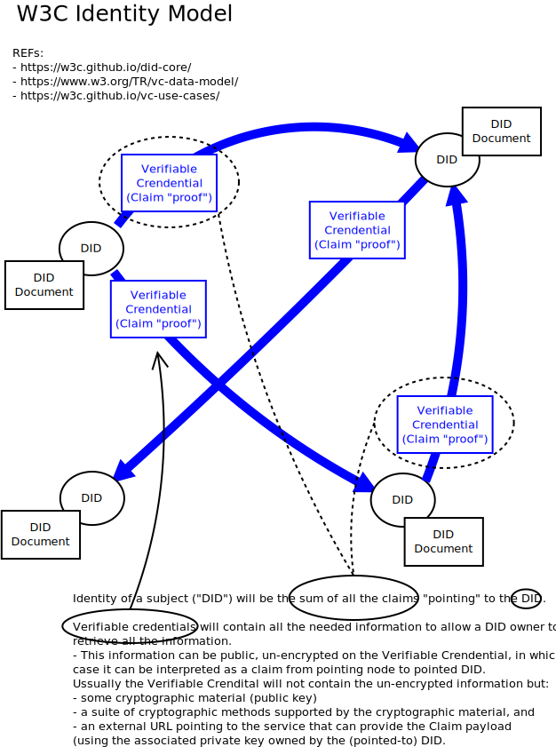

External Links
- The size of the World Wide Web (The Internet)
@[https://www.worldwidewebsize.com/]
- State Of JS:
@[https://stateofjs.com/]
Check out our results to find out which libraries developers want to learn
next, which have the best satisfaction ratings, and much more.
-@[https://developer.mozilla.org/en-US/]
-@[https://eloquentjavascript.net/]
-@[https://www.infoq.com/articles/javascript-web-development-trends]
how well does your browser support HTML5?
@[http://html5test.com/]
- webplatform. Your Web, Documented.
-@[https://webplatform.github.io/]
The latest information on how to use the technology
that runs the web — HTML, CSS, JavaScript and more. WebPlatform.org is a
work in progress. We could use your help in making it better. Join us.
- Great blog about CSS design and HTML5
@[http://www.smashingmagazine.com/]
@[https://jvns.ca/blog/2018/11/01/tailwind--write-css-without-the-css/]
- Browser Built-in objects:
@[http://developer.mozilla.org/en-US/docs/Web/JavaScript/Reference/Global_Objects]
- @[https://css-tricks.com/learning-to-learn/]
Arrays
var l = [1,2,3,4,1]
l.length // 5
1 in l // true
l.indexOf(1) // ← 0 (-1 if not found)
l.lastIndexOf(1) // ← 4
l.join() // ← "1,2,3,4,1" string
l.pop(2/*index*/)// ← returns 3. after l = [1,2,4,1]
l.pop() // ← returns 1. after l = [1,2,4]
l.push(5) // ← 4 (new length) l = [1,2,4,5]
l.reverse() // l = [5,4,2,1]
l. shift() // ← 5 (1st element) l = [4,2,1]
l.unshift(5) // ← 4 (new length) l = [5,4,2,1]
l.slice() // TODO: return part of the array as new array.
l.sort() // l = [1,2,4,5]
//ºA sort function can be providedº
l.splice() // Adds/removes elements from array.
splice accepts two lists of elements: the
elements to remove and the ones to be added.
l.toString()
l.valueOf() // TODO: Returns the primitive value of the array.
Immutable JS Code
- const doesn't make an object inmutable.
It just avoid re-referencing or adding atributes. Ej:
const a = [1,2,3]
a[0] = 3 ; // Mutable
- Object.freeze(objInstance)
-ºInmutable JSº
TODO: @[https://facebook.github.io/immutable-js/]
Arrays:
.push(...) add an object to the current array
.concat(...) returns a new array with the added object, doesn't modify the
original array
ºDate and Timeº
@[https://developer.mozilla.org/en-US/docs/Web/JavaScript/Reference/Global_Objects/Date]
var date1 = new Date('December 17, 1995 03:24:00');
// Sun Dec 17 1995 03:24:00 GMT...
var date2 = new Date('1995-12-17T03:24:00');
// Sun Dec 17 1995 03:24:00 GMT...
console.log(date1 === date2);
// expected output: false;
console.log(date1 - date2);
// expected output: 0
var date3 = Date.now()
ºStringsº
- String object are immutable.
- methods do NOT alter the original String, but return new ones.
s = "1234"
s.length // 4
s.charAt(1) // 2
s.charCodeAt(index) // 49 (Unicode Code for "1")
String.concat(s1,..)// Joins Strings, returns copy of result.
s.indexOf(2) // 2 (1st occurrence) , -1 if doesn't exists
s.lastIndexOf(2) // 2 "
s.match(/^1/) // ["1"] (returns matching array)
s.replace(/^./,"A") // "A234"
s.search(/2.4/) // 1 position of 1st match.
slice(startPos, endPos): Extracts the part of the String between the specified
start and end positions. TODO
split(token): Splits the String into an array of subStrings, using the
specified token as the delimiter. TODO
substr(startPos, numChars): Extracts a subString from the String, beginning at
the start position through the specified number of
characters.
subString(startPos, endPos): Extracts a subString from the String, between the specified start position and end position.
toLowerCase(): Returns the String in all lowercase characters.
toUpperCase(): Returns the String in all uppercase characters.
trim(): Returns the String without any of the whitespace at either end.
valueOf(): Returns the primitive value of the String.
String.fromCharCode() // Converts Unicode → characters.
ECMAScript 6.0:
Template strings support string interpolation. Example:
let a="A"
let t = `a: ${a}`
console.log(t)
"a: A"
Introduction++
"OOP"
function Message (subject, recipient, content){
this.subject = subject;
this.recipient = recipient;
this.content = content;
}
Now that we have created a Message function we define its ".prototype" to complete the "Class":
Message.prototype = {
constructor: Message, ← !!
sendMessage: function(){
console.log('Sending message to ' + this.recipient);
},
show : function(){
console.log('To:' + this.recipient + 'Subject: ' + this.subject + 'Message:' + this.content);
}
};
The complete definition of the Message object is now in one place, and the same methods are available to all
instances of Message we create. Each message created can have its own instance properties that are passed through to
the constructor.
var workMessage = new Message('Work complete'', 'boss@mycorp.com', 'My work is done here');
var socialMessage = new Message('Time to go out', 'friend@gmail.com', 'Finished work now.');
workMessage.send();
socialMessage.send();
________________________
var F = function() {};// This is a function object.
var p = F.prototype; // prototype object associated.
var c = p.constructor; // function associated with pro.
c === F
true: F.prototype.constructor==F for any function
________________________
Method overide:
Dog.prototype.talk = function(){
console.log('The dog says');
Animal.prototype.talk.call(this);
}
When calling the parent object method earlier, we needed to know that the
parent was Animal.prototype. We can make the code more elegant by keeping a
record of what the parent object is.
Dog.prototype = new Animal();
Dog.prototype.constructor = Dog;
//define the parent property
Dog.prototype.parent = Animal.prototype;
Dog.prototype.talk = function(){
console.log('The dog says'); //use the parent property to invoke the method
this.parent.talk.call(this);
}
__________________
Namespaces:
var com = com || {};
com.apress = com.apress || {};
com.apress.chapterone = com.apress.chapterone || {};
com.apress.chapterone.Message = function Message(...) {...}
The usage of a Message object will now need to respect the namespace as follows:
var myMessage = new com.apress.chapterone.Message(...);
Webpack assets bundle
"webpack: module ""loader""
(vs require.js vs browserify)
scripts.js:
require('../lib/module1.js') // sync run
____________________
"Install webpack (into the project & globally):
$ npm install -g webpack
$ npm init
$ npm install --save webpack
____________________
Configure webpack project
$ vim webpack.config.js
var debug = process.env.NODE_ENV !== ""production"";
var webpack = require('webpack');
module.exports = {
context: __dirname,
devtool: debug ? 'inline-sourcemap' : null,
entry: './js/scripts.js',
output: {
path: __dirname + '/js',
filename: 'scripts.min.js'
},
plugins: debug ? [] : [
new webpack.optimize.DedupePlugin(),
new webpack.optimize.OccurenceOrderPlugin(),
new webpack.optimize.UglifyJsPlugin({
mangle: false, sourcemap: false
})
],
};
_____________________
Run webpack: (generates scripts.min.js)
$ NODE_ENV=development webpack
$ NODE_ENV=production webpack
What's new
@[https://www.infoq.com/news/2020/10/webpack-5/]
Webpack 5.0 rethinks some core architectural decisions and focuses on the following key areas:
- Improved performance by leveraging persistent caching and long term caching
- Improved algorithm defaults
- Improved bundle sizes using better Tree Shaking and Code generation
- Improved compatibility with web platforms
- Improved build performance with Persistent Caching
- Improved Long Term Caching with better algorithms and defaults
- Improved bundle size with better Tree Shaking and Code Generation
- Improved compatibility with the web platform
- The clean up of internal structures left in a weird state while implementing features in v4 without introducing any breaking changes
- Preparation for future features by introducing breaking changes now, allowing us to stay on v5 for as long as possible
Among the long list of improvements, two key changes have caught the
attention of the JavaScript community - Module Federation, and the
change in default behavior for the Node.js API polyfills.
Compressing JS
We use uglify for this purpose like shown in the next script snipet:
rm -rf packaging/html # Avoid packaging old stuff by mistake
if [ -d compiledJS ]; then
rm -rf compiledJS
if [ $? != 0 ]; then
echo "couldn't remove compiledJS"
exit 1
fi
fi
mkdir compiledJS
cp -R html compiledJS/
rm -rf compiledJS/html/html_tests
echo "debug: $BASEDIR/compiledJS/html/services"
cd $BASEDIR/compiledJS/html/services || exit 1
find ./ -name "*js" -type f | grep -v "media" | while read f ; do
uglifyjs --max-line-len 80 -o tmp.js ${f} 1˃/dev/null
mv tmp.js ${f} 1˃/dev/null
Parcel Packet bundler
(Simpler to use that WebPack)
REF: https://hack.aragon.org/docs/tutorial.html
""" Since we're importing Node.js modules in our front-end, we need a build
script. For this, we opted to use parcel because it has zero config, but you
can use your favorite bundler.
Let's install Parcel first:
$ npm i parcel-bundler -D
Next, let's add the build script to package.json:
{
// ...
"scripts": {
"build": "parcel build app/script.js -d dist/ ⅋⅋ parcel build app/index.html -d dist/ --public-url '.'"
}
// ...
}
You can now build the front-end of your app by running npm run build.
Async Programming
Convert callback API to Promise API
When a function returns a promise, modern browsers let us use the new await
keyword. This new keyword (which will be familiar for C# developer) let you
create asynchronous code like it would be synchronous:
function setPromiseTimeout() {
return new Promise(function(callbackOK, callbackError) {
setTimeout(callbackOK, 500)
});
}
async function start() {
for (idx=0; idx˂3; idx++) { // ← loops will be very-difficult/imposible with Callbacks
await setPromiseTimeout()
console.log(idx)
}
}
start();
RºWARN!!!º:
Promise can not throw since that would
client code using the promise to both " }cath{" and ".catch(...)"
Concurrency
WebWorkers
- http://www.whatwg.org/specs/web-apps/current-work/multipage/common-dom-interfaces.html#concept-transferable-neutered
In order to enable repeated transfer of large amounts of data between Web
Workers [WEBWORKERS], ArrayBuffer implements the Transferable interface [HTML
]. This section defines the behavior of ArrayBuffers and views under the
structured cloning [HTML] and transfer algorithms.
- https://serviceworke.rs/
The Service Worker Cookbook is a collection of working, practical examples
of using service workers in modern web apps.
Service workers
(See also)
- key functionality for Progressive Web Apps, allowing them to be ‘installed’,
send relevant push notifications, and load quickly even on flaky networks.
- Other commonly touted benefits include reducing bandwidth.
- (REF: engineering blog post)
º"""Service workers is probably the single most powerful º
ºAPI added to the web platform recently. It gives you access toº
ºa programmable proxy in JavaScript land. You can do anything º
ºyou want with each request made and the response received by º
ºthe browser - cancel the request, re-route it, modify the º
ºresponse(in some cases), cache it, etc.""" º
- Some of the applications highlighted included client side load balancing,
image optimization per device and bandwidth conditions, and even advanced image decoding
- Workbox library allows to
rapidly integrate a number of common Service Worker functionality such as precaching, runtime
caching, request routing, background sync, and more.
- It is designed to be fully async; as a consequence, APIs such as synchronous
XHR and localStorage can't be used inside a service worker.
Improving Performance via Workers
@[https://www.infoq.com/news/2019/08/postMessage-performance-study/]
Debugging
Basic_Debugging
ºPlay with ajax requests (Firefox only?)º
Go to inspector → network tab → RightClick on request
→ choose Edit and Resend: Now you can change anything
you want: header, params, ... and resend.
- "debugger" keyword: pause in code just when console is open
- dump object to string:ºJSON.stringify(window.document)º
To avoid cicular dependencies problems redefine stringify like:
REF: @[https://stackoverflow.com/questions/11616630/how-can-i-print-a-circular-structure-in-a-json-like-format]
// Demo: Circular reference
JSON.stringifySec = function (circ) {
cache = []
result = JSON.stringify(circ, function(key, value) {
if (typeof value === 'object' ⅋⅋ value !== null) {
if (cache.indexOf(value) !== -1) {
// Duplicate reference found, discard key
return
}
// Store value in our collection
cache.push(value)
}
return value
})
cache = null
return result
}
var circ = {};
circ.circ = circ;
JSON.stringifySec (circ)
- Print the calling function in the called function:
var f1 = function(...){
console.warn("Called from:"+ arguments.callee.caller.toString());
...
- Quickly access elements in the console:
$(‘css-selector’) will return the first match of CSS selector.
$$(‘css-selector’) will return all of them.
}
-Dump async func.chain("stack-trace")
@[https://stackoverflow.com/questions/40300996/nodejs-is-is-possible-to-show-the-stack-trace-of-a-calling-async-function]
@[https://gist.github.com/lll000111/3d6a53da4d53beb909189793c7631ba6]
BºUPDATE 2019-08-04º: In Node.js 12, Async Stack Traces come out of the box
with flag '--async-stack-traces'
@[https://medium.com/@nodejs/introducing-node-js-12-76c41a1b3f3f]
// @flow
'use strict';
// Note: Promise.reject() can be used to trigger the stack-trace creation
const wait = delay =˃ new Promise(resolve =˃ setTimeout(() =˃ resolve(), delay));
const fnError = async () =˃ {
await wait(1);
ºthrow new Error('Ooohhhh my god, this went wrong!');º
^^^^^^^^^^^^^^^^^^^^^^^^^^^^^^^^^^^^^^^^^^^^^^^^^^^^^^
Some deeply nested (in the actual call hierarchy)
asynchronous function that throws an error.
};
HOW-TO:
Alternative 1:
STEP 1: ºAlways catch errorsº, never return the promise directly
(because then you cannot add the local stack trace)
STEP 2: Add a locally generated stack trace to the one already
existing on the error object
const fn2 = async () =˃ {
let result;
try {
result = await fnError();
} catch(err) { // ← STEP 1
err.stack +=º(new Error()).stackº; // ← STEP 2
throw err;
}
// Do stuff with result
return result;
};
Alternative 2: (Syntax alternative)
STEP 1: Instead of try/catch use a promise-method based version,
which has the advantage to allow assignment to "const":
const result = fnError()
º.catchº( // ← STEP 1
err =˃ {
err.stack += (new Error()).stack; // ← STEP 2 doesn't change
throw err;
}
);
Callning fn2 asyncrhonously from fn1 and dumping "async" stack-trace
// stack "Level 1"
const fn1 = async () =˃ {
try {
return await fn2();
^^^^^^^^^^^^^^^^^^^
RºWARNº:if something more complex than just retuning is executed the
err can be different to the fn1 async err and the async stack trace
will be "false"
} catch(err) {
err.stack += (new Error()).stack;
throw err;
}
};
// stack "Level 0"
const fn0 = async () =˃ {
try {
return await fn1();
} catch(err) {
err.stack += (new Error()).stack;
throw err;
}
};
fn0().catch(console.error);
Web Console, Advanced tricks:
- REF 1: (TODO)
@[https://raygun.io/blog/2015/06/useful-javascript-debugging-tips-you-didnt-know/]
(Chrome only?)
Display object as tables in the console:
console.table(animals);
Dump stack trace for a function:
this.funcZ = function(){
console.trace('trace car'); // ← show the stack trace up to this function
}
Quick find a function to debug:
debug(car.functY) Chrome only?
(not the same that console.debug)
monitor(funct1); Every time the function is
called it will be logged with the values
that was passed in
Quick find your DOM elements:
Mark a dom element in the elements panel and
use it in your console. Chrome inspector keeps the last 5 elements in its
history, so the last marked element will be displayed with $0, second to last
marked element $1 and so on.
Quick find a function to debug: debug(car.functY) -Note: is not the same that console.debug-
FlowType: Findtype-infer.bugs
Flow uses type inference to find bugs even without type annotations. It
precisely tracks the types of variables as they flow through your program.
Flow is designed for JavaScript programmers. It understands common JavaScript
idioms and very dynamic code.
Flow incrementally rechecks your changes as you work, preserving the fast
feedback cycle of developing plain JavaScript.
Black Block Scriptwhile debugging
CHROME: FIREFOX:
– Alt 1. inspector → source → Right click Inspector → Debugger → Mark scriptto black list →
the file to black list and choose black box script. Click on the eye in the very bottom left corner.
– Alt 2. Open up settings view → Click https://hacks.mozilla.org/2013/08/
"manage framework black boxing" → write a regexp in new-features-of-firefox-developer-tools-episode-25/
popup to blackbox, for example, the entire vendor folder.
https://developer.chrome.com/devtools/docs/blackboxing
DOM-INSPECTING
Quickly access elements in the console:
$(‘css-selector’) returns first match of CSS selector
$$(‘css-selector’) returns all matches
SOURCE MAPPING
http://blog.getsentry.com/2015/10/29/debuggable-javascript-with-source-maps.html
source maps are JavaScript’s version of debug symbols: Include with:
//# sourceMappingURL=/path/to/app.min.js.map
modern JavaScript transpilers (TypeScript,...) has a command-line option for generating the associated source map.
source map example:
{
version : 3, // version of source map spec (should be 3)
file: "app.min.js", // generated filename associated to
sourceRoot : "", // all sources are relative to it (opt)
sources: ["foo.js", "bar.js"], // URLs to original files
names: ["src", "maps", "are"], // variable/method names found in your code
mappings: "AAgBC,SAAQ,CAAEA" // base64Enc VLQ values source code mappings
}
Fiddler Debug Proxy
Fiddler. HTTP proxy debugger:
- Allows to replace remote html/css/... with local one.
Very useful when deploying to remote server can be "slow" due
to CI constrains.
- Allows to see the "total page weight" HTTP caching and compression at a glance
Video Tutorial: http://www.youtube.com/watch?v=TP_5JYatlNQ
Functional Testing
Mocha
@[https://mochajs.org/]
Mocha is a feature-rich JavaScript test framework running on Node.js
and in the browser, making asynchronous testing simple and fun.
Mocha tests run serially, allowing for flexible and accurate
reporting, while mapping uncaught exceptions to the correct test
cases. Hosted on GitHub.
Selenium (test Automation)
@[http://docs.seleniumhq.org/]
- http://code.tutsplus.com/tutorials/headless-functional-testing-with-selenium-and-phantomjs--net-30545
- http://docs.seleniumhq.org/
- http://docs.seleniumhq.org/projects/ide/
- http://stackoverflow.com/search?q=selenium
- Selenium automates browser execution applying test on expected elements,
URL, events ....
Selenium IDE
@[https://examples.javacodegeeks.com/enterprise-java/selenium/selenium-ide-commands-example/]
@[https://www.youtube.com/watch?v=ZG3VFDMaAlk]
Cypress
https://docs.cypress.io/guides/getting-started/writing-your-first-test.html#Add-a-test-file
See comparative of test frameworks
https://blog.checklyhq.com/cypress-vs-selenium-vs-playwright-vs-puppeteer-speed-comparison/
es5 vs es6 degradationUp to 2500x decrease!!!
@[http://incaseofstairs.com/six-speed/]
YSlow
YSlow analyzes web pages and why they're slow
based on Yahoo!'s rules for high performance web sites
Feature highlights
- Grades web page based on one of three predefined ruleset
or a user-defined ruleset;
- It offers suggestions for improving the page's performance;
- Summarizes the page's components;
- Displays statistics about the page;
- Provides tools for performance analysis, including Smush.it™
and JSLint.
Mozilla Perf.Tool
The Performance tool gives you insight into your site's general responsiveness
, JavaScript and layout performance. With the Performance tool you create a
recording, or profile, of your site over a period of time. The tool then
shows you an overview of the things the browser was doing to render your site
over the profile, and a graph of the frame rate over the profile.
Javascript Alternatives
Elm
└BºNo Runtime Exceptionsº
Elm uses type inference to detect corner cases and give friendly
hints.
NoRedInk switched to Elm about two years ago, and 250k+ lines
later, they still have not had to scramble to fix a confusing runtime
exception in production.
Ex:
-- TYPE MISMATCH ---------------------------- Main.elm
The 1st argument to `drop` is not what I expect:
8| List.drop (String.toInt userInput) [1,2,3,4,5,6]
^^^^^^^^^^^^^^^^^^^^^^
This `toInt` call produces:
Maybe Int
But `drop` needs the 1st argument to be:
Int
Hint: Use Maybe.BºwithDefaultº to handle possible errors.
└BºGreat Performanceº
└BºEnforced Semantic Versioningº
automatically detecting changes thanks to its type system.
We use that information to guarantee that every single Elm package
follows semantic versioning precisely. BºNo surprises in PATCH releasesº
$ Bºelm diffº Microsoft/elm-json-tree-view 1.0.0 2.0.0
This is a MAJOR change.
---- JsonTree - MAJOR ----
Changed:
- parseString : String → Result String Node
+ parseString : String → Result Error Node
- parseValue : Value → Result String Node
+ parseValue : Value → Result Error Node
└BºSmall Assetsº
(faster page loads)
Just compile with the --optimize flag, let compiler do the rest.
No complicated set up.
└BºJavaScript Interopº
Reason(Facebook)
@[https://reasonml.github.io/]
Reason lets you write simple, fast and quality type safe code while
leveraging both the JavaScript & OCaml ecosystems.
- See (excellent) comparative Elm vs Reason
@[https://stackoverflow.com/questions/51015850/reasonml-vs-elm]
TypeScript
@[https://www.typescriptlang.org/]
AAA
External Links
- See also:
@[/Architecture/architecture_map.html?topics=oauth]
@[/Architecture/architecture_map.html?topics=aaa]
Firefox Web Auth API
@[https://www.infoq.com/news/2018/05/firefox-web-authentication-api]
Facebook loginjQuery plugin
@[http://garyrafferty.com/2013/08/20/Stupidly-Simple-Facebook-Login-JQuery-Plugin.html]
˂html˃
˂head˃
˂script type='text/javascript' src='jquery.js'˃˂/script˃
˂script type='text/javascript' src='flogin.js'˃˂/script˃
˂script type='text/javascript'˃
$(function() {
$('#login').facebook_login({
appId: 'YOUR-FACEBOOK-APP-ID',
endpoint: '/sessions/new', # where to POST the response to
onSuccess: function(data) {},# ← usually redirect
onError: function(data) {} #
permissions: 'read_stream' # ← OAuth permissions
# (default to email)
});
});
˂/script˃
˂/head˃
˂a href='#' id='login'˃Login with Facebook˂/a˃
˂/body˃
˂/html˃
W3C Identity (DID and Verifiable Credentials)
REFs:
https://www.w3.org/TR/did-core/
https://sovrin.org/wp-content/uploads/2018/03/Sovrin-Protocol-and-Token-White-Paper.pdf
- The W3C models identity as a graph, where nodes are globally unique IDs
and directed edges are claims that neighbors nodes make towards it:

BºDID Method Registryº:
@[https://w3c-ccg.github.io/did-method-registry/]
A registry for Decentralized Identifier Methods. At the time of writting:
1 did:abt: PROVISIONAL ABT Network ArcBlock ABT DID Method
2 did:btcr: PROVISIONAL Bitcoin Christopher Allen, Ryan Grant, Kim Hamilton Duffy BTCR DID Method
3 did:stack: PROVISIONAL Bitcoin Jude Nelson Blockstack DID Method
4 did:erc725: PROVISIONAL Ethereum Markus Sabadello, Fabian Vogelsteller, Peter Kolarov erc725 DID Method
5 did:example: PROVISIONAL DID Specification W3C Credentials Community Group DID Specification
6 did:ipid: PROVISIONAL IPFS TranSendX IPID DID method
7 did:life: PROVISIONAL RChain lifeID Foundation lifeID DID Method
8 did:sov: PROVISIONAL Sovrin Mike Lodder Sovrin DID Method
9 did:uport: DEPRECATED Ethereum uPort
10 did:ethr: PROVISIONAL Ethereum uPort ETHR DID Method
11 did:v1: PROVISIONAL Veres One Digital Bazaar Veres One DID Method
12 did:com: PROVISIONAL commercio.network Commercio Consortium Commercio.network DID Method
13 did:dom: PROVISIONAL Ethereum Dominode
14 did:ont: PROVISIONAL Ontology Ontology Foundation Ontology DID Method
15 did:vvo: PROVISIONAL Vivvo Vivvo Application Studios Vivvo DID Method
16 did:aergo: PROVISIONAL Aergo Blocko Aergo DID Method
17 did:icon: PROVISIONAL ICON ICONLOOP ICON DID Method
18 did:iwt: PROVISIONAL InfoWallet Raonsecure InfoWallet DID Method
19 did:ockam: PROVISIONAL Ockam Ockam Ockam DID Method
20 did:ala: PROVISIONAL Alastria Alastria National Blockchain Ecosystem Alastria DID Method
21 did:op: PROVISIONAL Ocean Protocol Ocean Protocol Ocean Protocol DID Method
22 did:jlinc: PROVISIONAL JLINC Protocol Victor Grey JLINC Protocol DID Method
23 did:ion: PROVISIONAL Bitcoin Various DIF contributors ION DID Method
24 did:jolo: PROVISIONAL Ethereum Jolocom Jolocom DID Method
25 did:bryk: PROVISIONAL bryk Marcos Allende, Sandra Murcia, Flavia Munhoso, Ruben Cessa bryk DID Method
26 did:peer: PROVISIONAL peer Daniel Hardman peer DID Method
27 did:selfkey: PROVISIONAL Ethereum SelfKey SelfKey DID Method
28 did:meta: PROVISIONAL Metadium Metadium Foundation Metadium DID Method
29 did:tys: PROVISIONAL DID Specification Chainyard TYS DID Method
30 did:git: PROVISIONAL DID Specification Internet Identity Workshop Git DID Method
31 did:tangle: PROVISIONAL IOTA Tangle BiiLabs Co., Ltd. TangleID DID Method
32 did:emtrust: PROVISIONAL Hyperledger Fabric Halialabs Pte Ltd. Emtrust DID Method
33 did:ttm: PROVISIONAL TMChain Token.TM TM DID Method
34 did:wlk: PROVISIONAL Weelink Network Weelink Weelink DID Method
35 did:pistis: PROVISIONAL Ethereum Andrea Taglia, Matteo Sinico Pistis DID Method
36 did:holo: PROVISIONAL Holochain Holo.Host Holochain DID Method
37 did:web: PROVISIONAL Web Oliver Terbu, Mike Xu, Dmitri Zagidulin, Amy Guy Web DID Method
38 did:io: PROVISIONAL IoTeX IoTeX Foundation IoTeX DID Method
39 did:vaultie: PROVISIONAL Ethereum Vaultie Inc. Vaultie DID Method
40 did:moac: PROVISIONAL MOAC MOAC Blockchain Tech, Inc. MOAC DID Method
41 did:omn: PROVISIONAL OmniOne OmniOne OmniOne DID Method
42 did:work: PROVISIONAL Hyperledger Fabric Workday, Inc. Workday DID Method
43 did:vid: PROVISIONAL VP VP Inc. VP DID Method
44 did:ccp: PROVISIONAL Quorum Baidu, Inc. Cloud DID Method
45 did:jnctn: PROVISIONAL Jnctn Network Jnctn Limited JNCTN DID Method
46 did:evan: PROVISIONAL evan.network evan GmbH evan.network DID Method
47 did:elastos: PROVISIONAL Elastos ID Sidechain Elastos Foundation Elastos DID Method
48 did:kilt: PROVISIONAL KILT Blockchain BOTLabs GmbH KILT DID Method
49 did:elem: PROVISIONAL Element DID Transmute ELEM DID Method
50 did:github: PROVISIONAL Github Transmute GitHub DID Method
51 did:bid: PROVISIONAL bif teleinfo caict BIF DID Method
52 did:ptn: PROVISIONAL PalletOne PalletOne PalletOne DID Method
53 did:echo: PROVISIONAL Echo Echo Technological Solutions LLC Echo DID Method
54 did:trustbloc:PROVISIONAL Hyperledger Fabric SecureKey TrustBloc DID Method
55 did:san: PROVISIONAL SAN Cloudchain YLZ Inc. SAN DID Method
56 did:gatc: PROVISIONAL Ethereum, Hyperledger Fabric, Hyperledger Besu, Alastria Gataca Gataca DID Method
57 did:factom: PROVISIONAL Factom Sphereon, Factomatic,Factom Inc
58 did:signor: PROVISIONAL Ethereum, Hedera Hashgraph, Cryptonics Signor DID Method
Quorum, Hyperledger Besu
59 did:hedera: PROVISIONAL Hedera Hashgraph Hedera Hashgraph, Swisscom Blockchain AG
Hedera Hashgraph DID Method
60 did:sirius: PROVISIONAL ProximaX Sirius Chain ProximaX Enterprise, Proximax Inc.
ProximaX SiriusID DID Method
61 did:dock: PROVISIONAL Dock Dock.io Dock DID Method
62 did:twit: PROVISIONAL Twit DID Twit GitHub Twit DID Method
63 did:near: PROVISIONAL NEAR Ontology Foundation NEAR DID Method
64 did:vaa: PROVISIONAL bif China Academy of Information and Communications
Technology (CAICT) VAA Method
65 did:bba: PROVISIONAL Ardor Attila Aldemir BBA DID Method
66 did:morpheus: PROVISIONAL Hydra Internet of People Morpheus DID Method
67 did:etho: PROVISIONAL Ethereum Ontology Foundation ETHO DID Method
68 did:bnb: PROVISIONAL Binance Smart Chain Ontology Foundation Binance DID Method
69 did:celo: PROVISIONAL Celo Ontology Foundation Celo DID Method
70 did:klay: PROVISIONAL Klaytn Ontology Foundation Klaytn DID Method
71 did:trx: PROVISIONAL TRON Ontology Foundation TRON DID Method
72 did:schema: PROVISIONAL Multiple storage networks 51nodes GmbH Schema Registry DID Method
currently public IPFS and
evan.network IPFS
- Linked Data Proofs 1.0
@[https://w3c-ccg.github.io/ld-proofs/]
- A DID is stored (probably on a blockchain) along with a DID document
containing the public key for the DID, any other public credentials
the identity owner wishes to disclose, and the network addresses for
interaction. The identity owner controls the DID document by
controlling the associated private key.
Verifiable Credentials
@[https://w3c.github.io/vc-data-model/]
@[https://w3c.github.io/vc-use-cases/]
Verifiable Credentials == "Claim that can be probed by cryptography"
DID are the "nodes", and Verifiable Credentials are oriented edges.
Ver.Crendentials are claims that a DID-node makes about another DID-node.
- 4 roles supported by verifiable credentials:
( Issuer , Verifier , Subject , Holder )
- Introduction
- Terminology
- Core Data Model
- Basic Concepts
- Contexts
- Identifiers
- Types
- Credential Subject
- Issuer
- Issuance Date
- Proofs (Signatures)
- Expiration
- Status
- Presentations
- Advanced Concepts
- Lifecycle Details
- Trust Model
- Extensibility
- Data Schemas
- Refreshing
- Terms of Use
- Evidence
- Zero-Knowledge Proofs
- Disputes
- Authorization
- Syntaxes: JSON, JSON-LD ,Proof Formats
- Privacy Considerations
- Security Considerations
- Accessibility Considerations
- Internationalization Considerations
- Validation
- Base Context
- Subject-Holder Relationships
Decentralized Indentifiers (DID) Summary
- Identity stack agnostic spec implementation.
@[https://github.com/decentralized-identity/universal-resolver]
Supports DIDs on Sovrin, BTCR, uPort, Jolocom, Veres One,
ERC-725, Blockstack, IPFS, and DNS via community-contributed
drivers built on top of the Universal Resolver.
- ºUniversal DID Operationsº
@[https://github.com/WebOfTrustInfo/rwot8-barcelona/blob/master/topics-and-advance-readings/Universal-DID-Operations.md]
Markus Sabadello (markus@danubetech.com),Nader Helmy(nader.helmy@danubetech.com),
Vienna, 8th February 2019
All DID methods commonly share 4 operations:
Registar (Counterpart to "Resolver")
- Create: (All params are optional)
create(method, options, did-doc, wallet)→ state, metadata
^ ^ ^ ^
│ │ │ └ storage for existing/generated Priv.Keys
│ │ │ (text file, wallet API endpoint,
│ │ │ local wallet, etc.)
│ │ └ new DID Document
│ └ mainnet, testnet,...
└───── sov, btcr, v1, ...
- Update:
First, ownership over DID is verified
update(identifier, options, wallet, did-doc/-doc-op)
^
└ replace existing doc or
incremental update to existing Doc
- add-service
- remove-service
- add-publickey
- remove-publickey
- Revoke:
First, ownership over DID is verified
revoke(identifier, options, wallet) → state, metadata
- CheckOperation:
checkOperation(jobid ) → state, metadata
checkOperation(identifier) → state, metadata
At any time, we can query the Registrar to find the state of a
previous DID operation, or the last known state of the identifier.
jobid
returned as part of the state object
generated by the Registrar
Resolver: Read operations
- Resolve: straightforward implementation:
- no authentication/secrets required.
- atomic operation
- web friendly.
Registar
states
---------
finished ( DID , wallet {optional}
action ( jobid, actiontype )
wait ( jobid, waittype )
fail ( error message )
metadata
--------
operation metadata : duration
method metadata : method-specific hash,
token balance
Example states for btcr DID:
{ {
º"state" : "action"º º"state" : "wait"º
"jobid": "aa1231", "jobid": "aa1231",
"action": "fundingrequired", "action": "confirmingtransaction",
"bitcointaddress": "3QA21f...", "waittime": "100000" ,
"satoshis" : "111222" }
}
{ {
º"state" : "finished"º º"state" : "failed"º
"jobid": "aa1231", "jobid" : "aa1231",
"identifier": "did:btcr:1a..." "reason": "network_unavailable"
} }
w3c spec
@[https://w3c.github.io/did-core/]
(revision 2020-01-22)
Targets:
- provide verifiable, (D)ecentralized (D)igital (I)dentity.
independent of any centralized registry/Cert-Authority.
DIDs:ºURLs that relate a DID subject to a DID document º
ºallowing trustable interactions with that subject.º
- component of larger system like Verifiable Credentials ecosystem
###########
# DID UML #
###########
┌───────────────────────────────┐ SERVICE ENDPOINT ←┐
│DID Registry ┌──┐│ ───────────────────────────── │
│(Registar) ─┼─ ││ - represented by URI, UUID,... │
│ ─┼─ ││ - network address at which │
│ └──┘│ ┌─────────────────────┐ a service operates on behalf │
│mediates creation, verification│ │DID Resolver ┌┐│ of a DID subject. │
│updating, and deactivation of │ │ ─╪││ Existing services include: │
│decentralized identifiers. │ │Retrieves DID-doc ─└┘│ ·ºdiscovery servicesº │
│"type of" verifiable data │ │for a given DID │ ·ºsocial networksº │
│ registry. │ │ │ ·ºfile storageº │
└───────────────────────────────┘ └─────────────────────┘ ·ºverifiable claimº │
↓ 1repositoryº │
DID Controller 1←→1+ DID ┌────────→1 DID document │
────────────── ↑ ─── │ ─────────────── │
(human|...)entity │ URL 1←┘ + data set describing the DID-subject │
or a group of │ + 0+ cryptographic keys │
entities, in │ + mechanisms/verify methods(pub.keys,...) │
control of a │ that DID subject can use to authenticate │
DID and/or │ itself and prove their association │
DID document. │ with the DID. │
DID subject (opt) │ + 0+ attributes/claims describing the │
┌──────────────────┘ subject. │
─ As many DIDs as necessary to respect + graph─based data structures │
entity's desired separation of typically expressed using [JSON─LD]. │
identities,personas and contexts in + 0+ service endpoints enabling ←─────────┘
the everyday sense of these words. trusted interactions with the
─ Different DIDs can be needed to DID subject.
support different DID methods
and different cryptographic schemes
Non-normative DID example: Non-normative (self-managed) DID-document example:
"did:btcr:1BvBMSEYstWetqTFn5Au4m4GFg7xJaNVN2"
"did:id_of_DID_method:DIDI_method_specific_id" Minimal self-managed DID document
└─────────────────────┬──────────────────────┘ {
"@context": "https://www.w3.org/ns/did/v1",
resolves to a DID document with info like: "id": "did:id_of_DID_method:DIDI_method_specific_id",
- ways to cryptographically authenticate "authentication": [{
the entity in control of the DID. "id": "did:id_of_DID_method:DIDI_method_specific_id#keys-1",
- services that can be used to interact "type": "RsaVerificationKey2018",
with the entity. "controller": "did:id_of_DID_method:DIDI_method_specific_id",
URI scheme [RFC3986] "publicKeyPem": "-----BEGIN PUBLIC KEY...END PUBLIC KEY-----\r\n"
DID URL: }],
DID "service": [{
+ 0|1 DID path (/..path...) "id":"did:id_of_DID_method:123456789abcdefghi#vcs",
+ 0|1 DID query (?..query..) "type": "VerifiableCredentialService",
+ 0|1 DID fragment(#..fragment..): "serviceEndpoint": "https://example.com/vc/"
}]
}
ºSPEC AIMSº DID-methods (separate spec)
─────────── ───────────
- Define Generic DID scheme: - CRUD DID/DID-document mechanisms
- Define Generic set of DID-documents operations (Deletion → deactivation)
- Define conformance requirements for a - Apply to (D)IDs in centralized/federated/Decen.
DID-method-spec.
did:btrc:21tDAKCERh95uGgKbJNHYp;foo:bar=high ← Inmutable 1 ←→ 1 subject
───┬──── non-reusable
┌──────────────────────────────────────┘
generic DID parameter names.
hl resource hash of the DID document to add integrity protection, as
specified in [HASHLINK].
------------------------------------------------------------------------
service Identifies a service from the DID document by service ID.
------------------------------------------------------------------------
version-id Identifies a specific version of a DID document to be resolved (the
------------------------------------------------------------------------
version ID could be sequential, or a UUID, or method-specific). Note that this
parameter might not be supported by all DID methods.
------------------------------------------------------------------------
version-time Identifies a certain version timestamp of a DID document to be
resolved. That is, the DID document that was valid for a DID at a
certain time.
Note that this parameter might not be supported by all DID methods.
The exact processing rules for these parameters are specified in
[DID-RESOLUTION].
------------------------------------------------------------------------
6.3 Public Keys
A DID document MAY include a publicKey property.
DID document.publicKey (optional)
property value MUST public_key[]. ┌ RsaVerificationKey2018
---------- ├ Ed25519VerificationKey2018
URI id ├ Ieee2410VerificationKey2018
Pub Key Type type ──┼ ...
DID controller ←────── Authentication used to prove its
specific pub.key properties association with a DID.
from the Linked Data (10.2 Binding of Identity )
Cryptographic Suite Registry.
A DID-document MAY contain revoked keys,
by adding/refering to the revocation information
for the key (revocation list,...).
Public keys: expressed in either
- JSON Web Key (JWK) format using the publicKeyJwk property
- one of the formats listed in next table below.
(table currently assume PEM and Base58)
(it might change to base64url and/or base16)
| Key Type Support
├────────────┬──────────────────────────────────────────────────────────────────────────────
│ RSA │ JWK or Privacy Enhanced Mail (PEM) encoding
│ │
├────────────┼──────────────────────────────────────────────────────────────────────────────
│ ed25519 │ Ed25519 public key values MUST either be encoded as a JWK or be
│ │ encoded as the raw 32─byte public key value in Base58 Bitcoin format using the
│ │ publicKeyBase58 property.
├────────────┼──────────────────────────────────────────────────────────────────────────────
│ secp256k1─ │ Secp256k1 Koblitz public key values MUST either be encoded
│ koblitz │ as a JWK or be encoded as the raw 33─byte public key value in Base58 Bitcoin
│ │ format using the publicKeyBase58 property.
├────────────┼──────────────────────────────────────────────────────────────────────────────
│ secp256r1 │ Secp256r1 public key values MUST either be encoded as a JWK or be
│ │ encoded as the raw 32─byte public key value encoded in Base58 Bitcoin format
│ │ using the publicKeyBase58 property.
├────────────┼──────────────────────────────────────────────────────────────────────────────
│ Curve25519 │Curve25519 (also known as X25519) public key values MUST either be
│ │ encoded as a JWK or be encoded as the raw 32─byte public key value in Base58
│ │ Bitcoin format using the publicKeyBase58 property.
└────────────┴──────────────────────────────────────────────────────────────────────────────
ºCaching and expiration of the keys in a DID document is entirely theº
ºresponsibility of DID resolvers and other clients.º
DID_document.authentication: (Optional)
- Authentication is separate from authorization:
- DID controllers might wish to enable others to update
their DID document.
Ex:
{
"@context": "https://www.w3.org/ns/did/v1",
"id": "did:id_of_DID_method:123456789abcdefghi",
º"authentication":º[
"did:id_of_DID_method:123456789abcdefghi#keys-1",
"did:id_of_DID_method:123456789abcdefghi#biometric-1",
{
"id": "did:id_of_DID_method:123456789abcdefghi#keys-2",
"type": "Ed25519VerificationKey2018",
"controller": "did:id_of_DID_method:123456789abcdefghi",
"publicKeyBase58": "H3C2AVvLMv6gmMNam3uVAjZpfkcJCwDwnZn6z3wXmqPV"
}
],
}
ºAuthorization and Delegationº
- Operation-Authorization:
- Operation-Delegation:
ºSecurity Considerationsº
Each DID method MUST define how authorization and delegation are implemented,
including any necessary cryptographic operations.
There are at least two suggested methods for implementing Authorization and
Delegation, which may be layered:
A DID registry could implement a coarse-grained controller pattern by
enabling DID documents to express the DID of another DID controller that
controls it, or additionally,
A DID registry could implement a capabilities-based approach enabling
further fine-grained control of authorization and delegation.
Example 15: DID document with a controller property
{
"@context": "https://www.w3.org/ns/did/v1",
"id": "did:id_of_DID_method:123456789abcdefghi",
"controller": "did:id_of_DID_method:bcehfew7h32f32h7af3",
"service": [{
"type": "VerifiableCredentialService",
"serviceEndpoint": "https://example.com/vc/"
}]
}
Angular AAA with keycloak
@[https://medium.com/keycloak/secure-angular-app-with-keycloak-63ec934e5093]
Styling
CSS Selectors
By Coordinate
lector Example Example description
.class .intro Selects all elements with class="intro"
#id #firstname Selects the element with id="firstname"
º º Selects all elements
element p Selects all ˂p˃ elements
element,element div, p Selects all ˂div˃ elements and all ˂p˃ elements
element element div p Selects all ˂p˃ elements inside ˂div˃ elements
element˃element div ˃ p Selects all ˂p˃ elements where the parent is a ˂div˃ element
element+element div + p Selects all ˂p˃ elements that are placed immediately after ˂div˃ elements
element1~element2 p ~ ul Selects every ˂ul˃ element that are preceded by a ˂p˃ element
[attribute] [target] Selects all elements with a target attribute
[attribute=value] [target=_blank] Selects all elements with target="_blank"
[attribute~=value] [title~=flower] Selects all elements with a title attribute containing the word "flower"
[attribute|=value] [lang|=en] Selects all elements with a lang attribute value starting with "en"
[attribute^=value] a[href^="https"] Selects every ˂a˃ element whose href attribute value begins with "https"
[attribute$=value] a[href$=".pdf"] Selects every ˂a˃ element whose href attribute value ends with ".pdf"
[attributeº=value] a[hrefº="w3schools"] Selects every ˂a˃ element whose href attribute value contains the substring "w3schools"
:active a:active Selects the active link
By Relative Coordinate
:first-of-type p:first-of-type Selects every ˂p˃ element that is the first ˂p˃ element of its parent
:last-of-type p:last-of-type Selects every ˂p˃ element that is the last ˂p˃ element of its parent
:not(selector) :not(p) Selects every element that is not a ˂p˃ element
:first-child p:first-child Selects every ˂p˃ element that is the first child of its parent
:last-child p:last-child Selects every ˂p˃ element that is the last child of its parent
:nth-child(n) p:nth-child(2) Selects every ˂p˃ element that is the second child of its parent
:nth-last-child(n) p:nth-last-child(2) Selects every ˂p˃ element that is the second child of its parent, counting from the last child
:nth-last-of-type(n) p:nth-last-of-type(2) Selects every ˂p˃ element that is the second ˂p˃ element of its parent, counting from the last child
:nth-of-type(n) p:nth-of-type(2) Selects every ˂p˃ element that is the second ˂p˃ element of its parent
:only-of-type p:only-of-type Selects every ˂p˃ element that is the only ˂p˃ element of its parent
:only-child p:only-child Selects every ˂p˃ element that is the only child of its parent
:root :root Selects the document's root element
::after p::after Insert content after every ˂p˃ element
::before p::before Insert content before the content of every ˂p˃ element
:empty p:empty Selects every ˂p˃ element that has no children (including text nodes)
::first-letter p::first-letter Selects the first letter of every ˂p˃ element
::first-line p::first-line Selects the first line of every ˂p˃ element
By From StatusA
:checked input:checked Selects every checked ˂input˃ element
:disabled input:disabled Selects every disabled ˂input˃ element
:enabled input:enabled Selects every enabled ˂input˃ element
:valid input:valid Selects all input elements with a valid value
:invalid input:invalid Selects all input elements with an invalid value
:read-only input:read-only Selects input elements with the "readonly" attribute specified
:read-write input:read-write Selects input elements with the "readonly" attribute NOT specified
:required input:required Selects input elements with the "required" attribute specified
:in-range input:in-range Selects input elements with a value within a specified range
:out-of-range input:out-of-range Selects input elements with a value outside a specified range
:optional input:optional Selects input elements with no "required" attribute
:focus input:focus Selects the input element which has focus
Links
::selection ::selection Selects the portion of an element that is selected by a user
:target #news:target Selects the current active #news element (clicked on a URL containing that anchor name)
:visited a:visited Selects all visited links
:link a:link Selects all unvisited links
Others
:hover a:hover Selects links on mouse over
:lang(language) p:lang(it) Selects every ˂p˃ element with a lang attribute equal to "it" (Italian)
CSS variables
https://www.infoq.com/news/2020/06/css-variables-design-systems/
Why We Don't Use a CSS Framework
css calc
calc support in browsers:
@[http://caniuse.com/#feat=calc]
css calc alternative:
@[http://stackoverflow.com/questions/16034397/css-calc-alternative]
box-sizing: content-box|border-box|initial|inherit;
Property Values
Value Description
content-box Default. width and height (and min/max) includes only the content. Border/padding/margin not included
border-box The width and height properties (and min/max properties) includes content, padding and border, but not the margin
initial Sets this property to its default value. Read about initial
inherit Inherits this property from its parent element. Read about inherit"
CSS3 3D animation
- http://codepen.io/dehash/pen/Bfory
CSS3 3D image animation
CSS Layout
display:=
none
inline: render in same line than parent
block: mode block render (a box in its own line)
inline-block: in-line box. It can be assigned a size (width, height) and it can have
margin and padding.
list-item: render as a list
table, inline-table, table-header-group, table-footer-group, table-row, table-row-group,
table-column, table-column-group, table-cell, table-caption
float := left | right (only for inline|inline-block)
ºclearº
The clear property is used to control the behavior of floating elements.
Elements after a floating element will flow around it. To avoid this, use the
clear property.
The clear property specifies on which sides of an element floating elements
are not allowed to float. Example:
div { clear: left; }
PostCSS
The end of global CSS
From @[https://www.infoq.com/news/2018/11/ring-1-jetbrains]
"""Many projects have begun embracing PostCSS as a replacement for traditional
CSS preprocessors due to its alignment with modern CSS standards. Ring UI 1.0
follows this approach to support CSS properties and CSS modules, and
deprecates support for the previous usage of SASS, providing better CSS
encapsulation."""
State of CSS (2019)
Fonts/Art Gallery
fontsquirrel
Declaring external font:
@font-face
{
font-family: MyFontFamilyName; /* "id" to be used in CSS for this font*/
src: url('my_font.ttf');
src: url('my_font.eot');
src: url('my_font.svg');
src: url('my_font.woff');
}
use:
h1 { font-family: 'MyFontFamilyName'; }
- https://www.fontsquirrel.com/
Free fonts have met their match. We know how hard it is to find quality
freeware that is licensed for commercial work. We've done the hard work, hand-
selecting these typefaces and presenting them in an easy-to-use format. Here
are some of our favorites:
http://christ-offer.blogspot.com.es/2011/05/html5css3-fonts-with-font-face.html
- Embedding specific fonts on a web page, traditionally, has been
accomplished using images. Though IE 5.0+ allowed you to embed fonts on your
web page, they needed to be in EOT (Embedded OpenType) format. Other
browsers supported TTF (TrueType) and OTF (OpenType) fonts. IE9 now supports
TTF, OTF and also WOFF (Web Open Font). To accomplish the task of embedded
real fonts into your web pages, use the CSS3 @font-face rule.
- Where to get quality FREE fonts for use in web pages? FontSquirrel is a
great place with hundreds of free fonts, including kits that demonstrate how
to embed and use them into a web page, plus a generator to create your own.
With the kit, you get the font in all the formats so that you can craft your
web pages to support all the major
Art Gallery
Icon Gallery:
@[https://github.com/NitruxSA/nitrux-icons]
@[http://tiheum.deviantart.com/art/Faience-icon-theme-255099649]
@[http://tiheum.deviantart.com/art/Faenza-Icons-173323228]
@[http://0rax0.deviantart.com/art/Uniform-Icon-Theme-453054609]
@[http://gnome-look.org/content/show.php/Dalisha?content=166286]
SweetAlertReplacement for Alert
@[https://github.com/t4t5/sweetalert]
"Random" toolkits
Dojo Toolkit
@[https://dojotoolkit.org]
"Everything you need to build a Web app. Language utilities, UI components,
and more, all in one place, designed to work together perfectly."
Coil: monetizing the Web
@[https://medium.com/coil/coil-building-a-new-business-model-for-the-web-d33124358b6]
Gtk+ to JS
@[https://www.rollapp.com/]
GTK+ apps ported to Javascript (HTML5)
npx =="run once npm install"
https://medium.com/@maybekatz/introducing-npx-an-npm-package-runner-55f7d4bd282b
Those of you upgrading npm to its latest version, npm@5.2.0, might notice
that it installs a new binary alongside the usual npm: npx.
Have you ever run into a situation where you want to try some CLI tool, but it
’s annoying to have to install a global just to run it once? npx is great for
that, too. Calling npx when isn’t already in your $PATH
will automatically install a package with that name from the npm registry for
you, and invoke it. When it’s done, the installed package won’t be anywhere
in your globals, so you won’t have to worry about pollution in the long-term.
single-spa
https://single-spa.js.org
- Framework freedom:
Use multiple frameworks in a single-page application, allowing you to split code
by functionality and have Angular, React, Vue.js, etc. apps all living in harmony.
- Lazy load applications
Stand up new apps next to the old one. You write the applications, single-spa makes
them work together and won't load them until they're needed.
- Front-end microservices
Combine many small apps, empowering teams to choose their technology. Stay nimble as
your team, product, and tech stack grows and changes over time.
Introduction
@[https://grpc.io/]
@[https://en.wikipedia.org/wiki/GRPC]
- Cloud Native Foundation incubating project.
- open source high performance RPC framework cross-platform and multi-language.
- It can efficiently connect services in and across data centers
with pluggable support for load balancing, tracing, health checking and
authentication.
- It is also applicable in last mile of distributed computing to connect devices,
mobile applications and browsers to backend services.
- bidirectional streaming and flow control
- blocking or nonblocking bindings, and cancellation and timeouts.
- initially developed at Google.
- It uses HTTP/2 for transport, Protocol Buffers as the interface description language,
- Proxy objects can be genrated for many languages with safe type checking
(when available in the underlying language)
PROTOC + gRPC INSTALLATION STEPS
- STEP 1: ProtoC installation:
Unpack protoc-3.x...x86_64.zip
from https://github.com/google/protobuf/releases to /opt/protoc
$ sudo ln -s \
/opt/protoc/include/google/protobuf \
/usr/include/google/protobuf
$ sudo ln -s /opt/protoc/bin/protoc \
/usr/bin/protoc
- Install Node/Python/Go/... tools: REF: @[http://www.grpc.io/blog/installation]
Language |Platform|Command
---------+--------+------------------------------------
Node.js |All |npm install -g grpc
| |(installs the grpc_node_plugin @
| |/usr/(local/)lib/node_modules
| |/grpc-tools/bin
---------+--------+------------------------------------
Python |All |pip install grpcio
---------+--------+------------------------------------
Ruby |All |gem install grpc
---------+--------+------------------------------------
PHP |All |pecl install grpc-beta
---------+--------+------------------------------------
Go |All |go get google.golang.org/grpc
---------+--------+------------------------------------
Objective|Mac |Runtime source fetched automatically
-C | |from Github by Cocoapods
---------+--------+------------------------------------
C# |Windows |Install gRPC NuGet package from your
| |IDE(V.Studio, Monodevelop, ...)
---------+--------+------------------------------------
Java |All |Use our Maven and Gradle plugins
| |that provide gRPC with statically
| |linked boringssl
---------+--------+------------------------------------
C++ |All |Currently requires manual
| |build and install
- See also: [TODO]
@[https://github.com/tldr-pages/tldr/blob/master/pages/common/grpcurl.md]
Like cURL, but for gRPC!!!!
CLI tool for interacting with gRPC servers.
More information: https://github.com/fullstorydev/grpcurl.
gRPC PROTOBUFEXCEPTION HANDLING
C⅋P FROM @[http://stackoverflow.com/questions/38810657/exception-handling-in-grpc]
Q: I have a server written in Java and client written in PHP.
How can client catch exception from server if anything goes wrong?
I can't find anything about exception handling in gRPC documentation.
A: For handled exceptions, call responseObserver.onError(). If you pass in a
StatusRuntimeException or StatusException (generally created via
status.asRuntimeException()) the status code and description will be
communicated to the client.
Unhandled exceptions within a callback will cancel the RPC and will continue
propagating the exception (generally leading in an UncaughtExceptionHandler being
called for the executor).
Rsocket
Rsocket authors claim that it's better than gRPC:
- @[https://github.com/rsocket/rsocket/blob/master/Motivations.md]
- @[https://medium.com/netifi/rpc-thunder-dome-3103e2449957]
Data Visualization
Perspective
@[https://github.com/jpmorganchase/perspective]
A streaming data visualization engine for Javascript, Perspective
makes it simple to build real-time & user configurable analytics
entirely in the browser.
D3 and SvelteD3 Announces 5.0 Release of SVG, Canvas, and HTML Library for Manipulating Data
The D3 team has announced their 5.0 release, which embraces several newer
asynchronous patterns such as promises and fetch, and updates key visualization APIs.
D3.js is a JavaScript library for producing dynamic, interactive data
visualizations in web browsers. As stated in the D3 5.0 release notes:
With the adoption of promises, D3 now uses the Fetch API instead of XMLHttpRequest:
the d3-request module has been replaced by d3-fetch. Fetch supports many
powerful new features, such as streaming responses.
See also:
- @[https://www.infoq.com/news/2020/10/svelte-d3-animation-data-vis/]
""" D3 has a large set of utility functions for graph visualization
that includes the computation of scales, interpolation, shapes, and
more. On the other hand, Svelte handles best the modularity (through
components), interactivity (event handling), reactivity, and
responsiveness (through data binding) of the graph visualization. """
- @[https://www.infoq.com/news/2020/12/airbnb-visx-data-visualization/]
Airbnb Releases Visx, a Set of Low-Level Primitives for Interactive
Visualizations with React components that can be composed into interactive
visualizations.
Visx builds on D3 primitives, the React component model, and React DOM
handling. Visx strives to provide a data visualization front-end solution
that is easy to learn without sacrificing expressiveness.
" ... After 3 years of development, 2.5 years of production use at Airbnb,
and a rewrite in TypeScript we are excited to announce the official
1.0 release of visx (formerly vx). ..."
RaphaelJS
- http://raphaeljs.com/
D3 is certainly a very powerful tool and will do much of what Raphael does.
Most of what you can do in Raphael you can also do in D3. Many will argue
that D3 is far more powerful, and indeed it can handle more complex graphics,
particularly for business purposes. However, from an artistic standpoint, you
already know that you don’t always want to use the same tool for everything.
Sure D3 is powerful. So is a heavy duty spray gun. That does not mean that it
is right for all artistic purposes. Sometimes you only need a simple brush.
JointJS
http://www.jointjs.com/tutorial
http://www.jointjs.com/demos/umlcd
- Diagrams consist of elements connected with links.
- A diagram in JointJS is represented by a model joint.dia.Graph.
- This model then collects cells (a term representing both elements and links).
- A cell could therefore be either an element (joint.dia.Element or its inheritants) or a link (joint.dia.Link).
- In JointJS (starting from version 0.6), you manipulate models, not views."
- To be able to see something on the screen, the graph model must be attached to the joint.dia.Paper view.
- Joint.JS "Hello World!:
˂script src="joint.js"˃˂/script˃
var graph = new joint.dia.Graph;
var paper = new joint.dia.Paper({
el: $('#myholder'),
width: 600,
height: 200,
model: graph, ← instance of graph
gridSize: 1
});
var paperSmall = new joint.dia.Paper({
el: $('#myholder-small'),
width: 600,
height: 100,
model: graph, ← instance of graph
gridSize: 1
});
paperSmall.scale(.5);
paperSmall.$el.css('pointer-events', 'none');
var rect = new joint.shapes.basic.Rect({
position: { x: 100, y: 30 },
- Event handling (based on the Backbone MVC)
See all events triggered by any model in the graph:
graph.on('all', function(eventName, cell) {
console.log(arguments);
});
rect.on('change:position', function(element) {
console.log(element.id, ':', element.get('position'));
});
- Styling:
rect.attr({
rect: { fill: '#2C3E50', rx: 5, ry: 5, 'stroke-width': 2, stroke: 'black' },
text: {
text: 'my label', fill: '#3498DB',
'font-size': 18, 'font-weight': 'bold', 'font-variant': 'small-caps', 'text-transform': 'capitalize'
}
});
- Setting vertices on a link is as simple as:
link.set('vertices', [{ x: 300, y: 60 }, { x: 400, y: 60 }, { x: 400, y: 20 }])
If you prefer the link to not be sharply broken at the vertices but instead interpolated by a curve,
set the smooth attribute:
link.set('smooth', true)
- JointJS has built-in elements for basic shapes.
These shapes are all in the joint.shapes.basic namespace and consist of
- joint.shapes.basic.Rect
- joint.shapes.basic.Circle
- joint.shapes.basic.Text
- joint.shapes.basic.Image
Babylon.js 3D Game Engine
https://blogs.windows.com/buildingapps/2018/05/01/announcing-babylon-js-v3-2/#yDoTuK4LbD0yxLd3.97
Babylon.js is an open source framework designed from ground up to help create
easy and powerful 3D experiences in your browser or your web apps.
@[https://www.youtube.com/watch?v=m-YWBmim2Fo]
ThreeJS
@[http://threejs.org/]
Pixi (Adobe Flash alternative)
@[https://www.infoq.com/news/2019/05/pixi-webgl-html5-v5-games/]
PixiJS, a standard-based, open-source alternative to Adobe Flash,
recently released its fifth major version. PixiJS v5 abstracts a
large set of WebGL features behind a new API which falls back to
HTML5's canvas if needed
JiSONcontext-freegrammar to JS
http://zaach.github.io/jison/docs/
Jison takes a context-free grammar as input and outputs a JavaScript
file capable of parsing the language described by that grammar.
You can then use the generated script to parse inputs and accept,
reject, or perform actions based on the input. If you’re familiar
with Bison or Yacc, or other clones, you’re almost ready to roll.
Multimedia
- http://www.w3.org/2010/05/video/mediaevents.html
- http://stackoverflow.com/questions/14317179/display-a-video-from-a-blob-javascript
var reader = new FileReader();
reader.readAsDataURL(vid);
function display(vid){
var video = document.getElementById("video");
video.src = window.URL.createObjectURL(vid);
}
- http://html5doctor.com/video-canvas-magic/
http://html5doctor.com/demos/video-canvas-magic/demo2.html
https://developer.mozilla.org/en-US/docs/Web/HTML/Manipulating_video_using_canvas
- Video & MediaSource:
https://dvcs.w3.org/hg/html-media/raw-file/tip/media-source/media-source.html
During playback, the media element pulls segment data out of the source
buffers, demultiplexes it if necessary, and enqueues it into track buffers so
it will get decoded and displayed. buffered describes the time ranges that
are covered by media segments in the source buffer.
Once a new SourceBuffer has been created, it expects an initialization
segment to be appended first. This first segment indicates the number and
type of streams contained in the media segments that follow. This allows the
media element to configure the necessary decoders and output devices
A MediaSource object can be attached to a media element by assigning a
MediaSource object URL to the media element src attribute or the src
attribute of a ˂source˃ inside a media element. MediaSource object URLs are
created by passing a MediaSource object to window.URL.createObjectURL().
Initialization segments are an optimization. They allow a byte stream format
to avoid duplication of information in Media Segments that is the same for
many Media Segments. Byte stream format specifications need not specify
Initialization Segment formats, however. They may instead require that such
information is duplicated in every Media Segment.
| http://updates.html5rocks.com/2011/11/Stream-video-using-the-MediaSource-API
|*//SUMMARY:
| video.src = video.webkitMediaSourceURL;
| ...
| video.webkitSourceAppend(new Uint8Array(...));
| if (endOfStreamDetected) {
| video.webkitSourceEndOfStream(HTMLMediaElement.EOS_NO_ERROR);
| }
|
|*//FULL CODE:*
| const chunkSize = Math.ceil(file.size / 5 /*number of Chunks */); // file is a video file
| var video = document.querySelector('video');
| video.src = video.webkitMediaSourceURL;
| video.addEventListener('webkitsourceopen', function(e) {
| for (var i = 0; i ˂ NUM_CHUNKS; ++i) {
| var startByte = chunkSize * i;
| var chunk = file.slice(startByte, startByte + chunkSize); // get slice
| var reader = new FileReader();
| reader.onload = (function(idx) {
| return function(e) {
| video.webkitSourceAppend(new Uint8Array(e.target.result)); // appending chunk:
| if (idx == NUM_CHUNKS - 1) {
| video.webkitSourceEndOfStream(HTMLMediaElement.EOS_NO_ERROR);
| // appending chunk:
| }
| };
| })(i);
| reader.readAsArrayBuffer(chunk);
| }
| }, false);
|
| splits video into chunks, then "stream" to a ˂video˃ tag by appending each chunk to the element using the MediaSource API.
|
| If you're interested in learning more about the API, see the specification.
|
| Support: Currently, the MediaSource API is only available in Chrome Dev Channel 17+ with the
| --enable-media-source flag set or enabled via about:flags.
|
| CONST chunkSize = Math.ceil(file.size / 5 /*number of Chunks */); // file is a video file
Web-AudioComponents
@[https://github.com/web-audio-components]
Binary Data
@[https://github.com/jDataView]
- jBinary High-level API for working with binary data.
- jDataView. DataView. Extended. Anywhere.
@[https://github.com/jDataView/jBinary/wiki/jBinary-Constructor]
@[https://github.com/jDataView/jDataView]
@[http://www.khronos.org/registry/typedarray/specs/latest/]
| "* BufferArray: Array of Bytes. Constructor BufferArray(byte length)
| * TypedArray: Type view of the Buffer Array (Ui|i)nt(8|16|32)Array , Float(32|64)Array
| Constructors:
| +- TypedArray(byte length) ← Creates new BufferArray
| +- TypedArray(TypedArray (existing)array) ← Creates new BufferArray duplicated of array
| +- TypedArray(sequence array) ← Creates new BufferArray from Javascript array
| +- TypedArray((existing)buffer[, byteOffset, length]) ← Creates new view from existing buffer
| Methods:
| +- void set( TypedArray array[, offset]) ← copy values from TypedArray
| +- void set( type[] array[, offset]) ← copy values from JS array
| +- TypedArray subarray(offsetFirstElement [, offsetLastElement=""last one""]) ← Creates a view, not a new buffer!!
|
| * DataView: Low level endianess aware view of the Buffer (use for file/hardware/network access with a defined endianess defined ""outside"" our computer)
| Contructor:
| +- DataView(ArrayBuffer buffer[, byteOffset, byteLength])
| Methods (Read):
| +- get(Ui|I)nt(8|16|32)(byteOffset[, littleEndian])
| +- getFloat(32|64)(byteOffset[, littleEndian])
| Methods (Write):
| +- set(Ui|I)nt(8|16|32)(byteOffset, value[, littleEndian] )
| +- setFloat(32|64)(byteOffset, value[, littleEndian] )
| Note: Detecting endianness:
| var littleEndian = function() {
| var buffer = new ArrayBuffer(2);
| new DataView(buffer).setInt16(0, 256, true);
| return new Int16Array(buffer)[0] === 256; /* true | false */
| };
- Creating a simple array of 128 32-bit floats and filling with 8 consecutive floats:
var f32s = new Float32Array(128);
var groupLength = 8;
for (var i = 0; i ˂ 128/groupLength; ++i) {
var sub_f32s = f32s.subarray(i, i+groupLength);
for (var j = 0; j ˂ 8; ++j) {
sub_f32s[j] = j;
}
}
- Representing a point with 3xFloat32 coordinates values plus 4xUint8 color data values:
var elementSize = 3 º Float32Array.BYTES_PER_ELEMENT + 4 º Uint8Array.BYTES_PER_ELEMENT;
var buffer = new ArrayBuffer(4 * elementSize);
var coords = new Float32Array(buffer, 0);
var colors = new Uint8Array(buffer, 3 * Float32Array.BYTES_PER_ELEMENT);
- Slicing a large array into multiple regions:
var buffer = new ArrayBuffer(1024);
var floats = new Float32Array(buffer, 0 /* 0 offset*/, 128); (128*4 = 512 bytes)
var shorts = new Uint16Array (buffer, 512 /*floats offset*/, 128); (12*2 = 256 bytes)
var bytes = new Uint8Array (buffer, shorts.byteOffset + shorts.byteLength);
- JBinary
ref: https://github.com/jDataView/jBinary
- Typical scenario:
- Create your custom types using jBinary.Type (if needed).
- Describe type set with JavaScript-compatible declarative syntax.
- Create jBinary instance from jDataView (or any underlying type) and your type set.
- Constructors:
+- new jBinary(jDataView data[, typeSet])
+- new jBinary(javascript Byte array[, typeSet])
Read Methods:
+- read(type[, offset = binary.tell()]) ← If offset is provided internal pointer doesn't moves
Pointer Methods:
+- tell(): Return the current position. Ex: var currentPos = binary.tell();
+- seek(position[, callback]): Go to position; if callback → execute it and reset position.
+- skip(count[, callback]): Advance by count bytes; same callback behavior as seek
Instance helpers
+- slice(start, end[, forceCopy = false]): Returns sliced version of current binary with same type set.
+- as(typeSet[, modifyOriginal = false]): Casts instance to typeSet
Loading Data
+- jBinary.loadData(source, callback(error, data)) (static method)
| source := Blob/File | HTTP(S)_URL | Data-URI (simple|base64-encoded) | Node.js (local file path|stream)
var b1 = new jBinary([0x05, 0x03, 0x7F, 0x1E]); // with default typeset
var b2 = new jBinary(new jDataView(data, 5, 10, true), { MetaName: ['string', 30]}); // typeset with custom type MetaName.
var firstInt = b1.read('uint32'); // uint32 value at offset 0 → Pointer moves 4 bytes
var byteAtOffset100 = b2.read('uint8', 100);// uint8 value at custom position → Pointer unchanged(offset provided)
var intAt200 = binary.seek(200, function () { return this.binary.read('int32') });
var intAfter8 = binary.skip(8, function () { return this.binary.read('int32') });
var binary = someExternalBinary.as(TAR); // casting
fileInput.addEventListener('change', function () {
jBinary.loadData(fileInput.files[0], function (error, data) {
if (error) { return console.log(error); }
...
});
});
jBinary.load('sample.tar', function (error, binary) {
if (error) { return console.log(error); }
var tar = binary.read('File'); // TAR format auto-detected (using jBinary.Repo)
});
- Typesets normally are object dictionaries
{ typeName1 : type1 , ← types that can refer to each other but they may also contain special config
typeName2 : type2 , values that set some global options or modes for entire typeset. Options are:
typeName3 : type3 ,
typeName4 : type4 ,
typeName5 : type5 ,
typeName6 : type6 ,
...
}
- jBinary.all - reference to general type that represents entire data; required for enabling user to read/write entire file at once.
- jBinary.mimeType - sets mime-type which should be used for saving data from this typeset (i.e., when calling toURI without argument).
- jBinary.littleEndian - sets endianness for this format.
- __________ Integers ______________
uint8 (byte) / int8 - one-byte integer.
uint16 / int16 - word.
uint32 / int32 - dword (double-word).
uint64 / int64 - qword - please see warning about precision loss in jDataView documentation.
___________ Floats ______________
float32 (float) - classic 32-bit float used in languages like C.
float64 (double) - 64-bit float with double precision (double in C), default for JavaScript number representation.
___________ Strings ______________
char - one-byte binary character.
string(@length, encoding = 'binary') - string of given length in binary or 'utf8' encoding, reads/writes to the end of binary if length is not given.
string0(@length, encoding = 'binary') - null-terminated string stored in given number of bytes; treated as dynamic null-terminated string if length is not given.
_________ Complex types __________
const(baseType, value, strict = false) - treats type as constant; if read value does not match expected and strict mode is enabled, calls strict(readValue) if it is function or simply throws TypeError if not.
array(baseType, @length) - array of given type and length, reads/writes to the end of binary if length is not given.
object(structure, proto = Object.prototype) - complex object of given structure (name → type), creates new context while processing inner properties; object may also contain functions instead of types for calculating some values during read/write for internal purposes.
extend(...object structures...) - extends one structure with others; merges data into one object when reading and passing entire object when writing.
enum(baseType, matches) - enumeration type with given key <=> value map (if value not found in the map, it's used "as-is").
_________ Binary types __________
bitfield(length) - unsigned integer of given bit length (supports up to 32 bits, wraps around 2^32).
blob(@length) - byte array represented in most native type for current engine; reads/writes to the end of binary if length is not given.
binary(@length, typeSet = {}) - jBinary instance on part of original one with given length and optional custom typeset (useful for container formats); accepts also raw binary data when writing.
_____ Control statements ______
if(@condition, trueType, falseType) - conditional statement.
if_not(@condition, falseType, trueType) - same but inverted.
skip(@length) - simply skips given length on read/write.
______About @ __________________
All the arguments marked with @(references) can be passed not only as direct values, but also as getter functions callback(context) or string property names inside current context chain.
- Usage (in Browser): Include scripts for jDataView and jBinary like that:
˂script src="//jdataview.github.io/dist/jbinary.js"˃˂/script˃
˂script˃
var typeSet = { magic: ['array', 'uint8', 4] };
jBinary.load('file.bin', typeSet, function (err, binary) { console.log(binary.read('magic')); } );
˂/script˃
- HLS player using JBinary
http://rreverser.github.io/mpegts/
- Ex1: Audio Data Transport Stream (ADTS):
(function (exports) {
var ADTS = {
/* :
* Structure: AAAAAAAA AAAABCCD EEFFFFGH HHIJKLMM MMMMMMMM MMMOOOOO OOOOOOPP (QQQQQQQQ QQQQQQQQ)
* ^bit (not byte)
* Header consists of 7 or 9 bytes (without or with CRC).
* Usage in MPEG-TS
* - ADTS packet must be a content of PES packet. Pack AAC data inside ADTS frame, than pack inside PES packet, then mux by TS packetizer.
* - ADTS frames goes one by one in TCP stream. Look for syncword, parse header and look for next syncword after.
*/
ADTSPacket: {
/*bits Letter*/ _start : function () { return this.binary.tell() },
/*12 A */ _syncWord : ['const', 12, 0xfff, true], // syncword 0xFFF, all bits must be 1
/* 1 B */ version : ['enum', 1, ['mpeg-4', 'mpeg-2']], // MPEG Version: 0 for MPEG-4, 1 for MPEG-2
/* 2 C */ layer : ['const', 2, 0], // Layer: always 0
/* 1 D */ isProtectionAbsent: 1, // protection absent, Warning, 1 → no CRC, 0 → CRC
/* 2 E */ profileMinusOne : 2, // Audio_Object_Types
/* 4 F */ samplingFreq : ['enum', 4, [96000,88200,64000,48000,44100,32000,24000,22050,16000,12000,11025,8000,7350]],// MPEG4 Sampl.FrequencyIndex
/* 1 G */ _privateStream : 1, // private stream, set to 0 when encoding, ignore when decoding
/* 3 H */ channelConfig : 3, // MPEG4 Audio Channel_Configurations(if 0, configuration is sent via an inband PCE)
/* 4 IJKL */ _reserved : 4, // originality, home, copyrighted, copyright start bits
/*13 M */ frameLength : 13, // frame length value. Must include 7 or 9 bytes of header length: = (ProtectionAbsent == 1 ? 7 : 9) + size(AACFrame)
/*11 O */ bufferFullness : 11, // Buffer fullness
/* 2 P */ aacFramesCountMinusOne: 2, // # of AAC frames(RDBs) in ADTS frame minus 1, for maximum compatibility always use 1 AAC frame per ADTS frame
/*16 Q */ data : ['blob', function (context) { return context.frameLength - (this.binary.tell() - context._start) }] // CRC if protection absent is 0
}
};
if (typeof module !== 'undefined' && exports === module.exports) {
module.exports = ADTS;
} else {
exports.ADTS = ADTS;
}
})(this);
- Ex2: MPEG-TS Packet:
MPEG-TS Packet:
Name |#bits|Description
_______________________________________________________________________________________________
sync byte |8 |Bit pattern from bit 7 to 0 as 0x47 or ASCII char 'G"
Transport Error Indicator(TEI)|1 |Set by demodulator if can't correct errors in the stream, to tell the demultiplexer that the packet has an uncorrectable error
Payload Unit Start Indicator |1 |Boolean flag with a value of true meaning the start of PES data or PSI otherwise zero only.
Transport Priority |1 |Boolean flag with a value of true meaning the current packet has a higher priority than other packets with the same PID.
PID |13 |Packet Identifier
Scrambling control |2 |'00' = Not scrambled. For DVB-CSA only→'01':Reserved,'10':Scrambled with even key,'11':Scrambled with odd key
Adaptation field exist |1 |Boolean flag
Contains payload |1 |Boolean flag
Continuity counter |4 |Sequence number of payload packets. Incremented only when a payload is present (i.e., payload value is true)
Note: the total number of bits above is 32 and is called the transport stream 4-byte prefix or Transport Stream Header.
Adaptation field |0+ |If adaption field exist value is true
Payload Data |0+ |If contains payload value is true
jBinary Packet Representation: {
_startof: function () { return this.binary.tell() },
_syncByte: ['const', 'uint8', 0x47, true],
transportError: 1,
payloadStart: 1,
transportPriority: 1,
pid: 13,
scramblingControl: 2,
_hasAdaptationField: ['Flag', 'adaptationField'],
_hasPayload: ['Flag', 'payload'],
contCounter: 4,
adaptationField: ['FlagDependent', '_hasAdaptationField', 'AdaptationField'],
payload: ['FlagDependent', '_hasPayload', jBinary.Template({
getBaseType: function (context) {
var pid = context.pid, file = this.binary.getContext(1);
if (pid ˂ 2 || pid in file.pat) {
MozillaWASI
@[https://www.infoq.com/news/2019/04/wasi-wasm-system-interface/]
Mozilla WASI Initiative:
- Run Web Assembly on All Devices, Computers, Operating Systems
Fastly Lucet
@[https://www.infoq.com/news/2019/04/fastly-lucet-web-assembly-open/]
WebAssembly Compiler and Runtime
Emscripten
"Emscripten is an LLVM to JavaScript
compiler. It takes LLVM bitcode (which can be generated from C/C++ using
Clang, or any other language that can be converted into LLVM bitcode)
and compiles that into JavaScript, which can be run on the web (or
anywhere else JavaScript can run)."
https://github.com/kripken/emscripten/wiki
http://stackoverflow.com/questions/14902514/installing-emscripten-on-ubuntu
http://asmjs.org/spec/latest/
Ext.Links
- Angular API:
@[https://angular.io/api?type=package]
- Github Repo:
@[https://github.com/angular/angular]
What's new
@[https://www.infoq.com/news/2020/11/angular-11/]
BºAngular 11º
@[https://www.infoq.com/news/2020/11/angular-11/]
@[https://blog.angular.io/version-11-of-angular-now-available-74721b7952f7]
- Hot Module Replacement implementation:
$º$ ng serve --hmr º ← It can be initialized with --hmr flag.
NG app will not need full page refresh on code changes:
Instead, latest changes to code/style/templates will be
updated directly while preserving the current state of
the application.
- Build process speed boost by upgrading to TypeScript 4.0
and through improving the ngcc update process.
- developers can now opt-in to the experimental Webpack 5 support
(faster builds with persistent disk caching and smaller bundle sizes
using improved tree-shaking). To enable it:
"resolutions": { "webpack": "5.4.0" } ← Add to package.json
- NG language service (popular add-on offers autocomplete, type checking, etc...)
is being transitioned to the new Ivy engine, offering improved support for
generic types.
- For simple upgrade of projects:
$º$ ng update @angular/cli @angular/coreº
RºWARNº: for more complex updates, use the interactive update guide
provided by the Angular team.
Architecture
@[https://angular.io/guide/architecture]
URL-like paths ←········ (map to) ·······→ views
^^^^^^^^ └───┬───┘
also integrates BºROUTERº screen elements
program data (NgModule) on target environments.
Service
┌─º@Compomentº
│ ^^^^^^^^^^
│ Compoment = Class +
│ ^ metadata-decorators ← include pointer to associated template
│ |
│ - Typically a component defines many views, arranged hierarchically and
│ the ºRouter serviceº defines navigation paths among them.
│ - At least one ºroot componentº is needed by App, connecting a
ºViewº "=="┤ component hierarchy with the page document object model (DOM).
screen │ - ºServiceº (providers) are injected (@Injectable() decorator) to provide
element │ needed non-visual functionality
on target │ - When a component is instantiated, it's associated directly with
environ. │ the (root) host view.
│
└─ºTemplateº == HTML + Directives +Bºdata binding MARKUPº
(App Logic) └────────┬────────┘
┌──────────────────────────┘
│
DOM │ COMPONENT
└┬┘ ┌────────┴────────────┐└───┬───┘
│ │
←················Bº{{value}}º·· ←┤
│ │
←·······Bº[property]="value"º·· ←┤
│ │
├→ Bº(event)="handler"º······· →
│ │
←···Bº[(ng-model)]="property"º·· →
-----------------------
Two way binding (forms mainly). Ex:
˂input [(ngModel)]="hero.name"˃
☞GºAll data bindings are processed once for each JS event cycle,º
Gºfrom app root component through tree children.º
- ºTemplate Evaluationº:
template input:
→ evaluate directives
→ resolve binding syntax
→ modify HTML elem. + DOM
- ºTemplate Pipesº (data transformation)
- Ex: date data → pipe → locale-date
- Predefined Pipes (@[https://angular.io/api?type=pipe]):
Async , Currency , Date , Decimal, I18n(Plural|Select), Json,
KeyValue, (Lower|Upper)Case , Percent , Slice , TitleCase,
User click → (intercepted by) → Router → (reacts by) → showing/hiding view hierarchies.
(ºlazy loadº └───────┬──────┘
of related modules) │
┌····································Bºhierarchical structureºis key ···┘
│ to how Angular detects/reacts
│ to changes in the DOM|app data.
┌───┴─────┐
┌→ view root ←→ NgModule1.rootComponent ┐ ←ºboostrapping moduleº (ex. app.module.ts)
· +- view1 ←→ NgModule1.component1 ├ A view hierarchy can include
· +- view2 ←→ NgModule2.rootComponent │ views from components in the
· +- view2 ←→ NgModule2.component3 ┘ same or different NgModule
· └───┬───┘ └───┬───┘
· | @[https://angular.io/guide/architecture-components]
· | - app logic controling a view (patch of screen)
· | through an properties+methods API.
· | - typescript
· |
· @[https://angular.io/guide/architecture-modules]
· - container|scope for a set of components|
· Service providers, ...
· -Bºcompilation contextº for components:
· - orthogonal app-domain|workflow|capabilities set.
· - can depend on other (imported) NgModules
·
└→ Ex Module: app.module.ts:
import {OºNgModuleº } from '@angular/core'; ← JS input
import {BºBrowserModuleº } from '@angular/platform-browser'; ← JS input
º@NgModuleº({ ← Decorator function.
ºimportsº: [ BºBrowserModuleº ],
ºprovidersº: [ Logger ], ← Creators of services that this NgModule
contributes to.
(providers at component level can also
be specified , which is often preferred.
declarations: [ AppComponent ], ← components|directives|pipes declared
exports: [ AppComponent ], ← (opt) Subset of declarations accesible
by templates in other NgModules
bootstrap: [ AppComponent ] ← (Only root module): main app view
})
export class AppModule { } ← JS export (vs NgModule export)
→ Ex Component: src/app/hero-list.component.ts
º@Componentº({
selector : 'app-hero-list', ← associated html tag name
┌→ templateUrl: './hero-list.component.html', ← seteable property programatically
│┌ providers: Bº[HeroService]º ← required Service prov. array
·│ ºSize must match constructor arg. sizeº
│· })
·│ export class HeroListComponent implements ºOnInitº {
│· Oºheroesº : Hero[]; ← data app property
·│ selectedHero: Hero; ← data app property
│·
·└ constructor Bº(private service:HeroService)º { }
│ // will be Dep.Injected
·
│ Qº@Input()ºhero : Hero;
· Qº@Input()ºpower: string;
│ ...
· QºngOnChanges(change_map: SimpleChanges)º{
│ └───────────┬───────────┘
· // maps each changed property to a SimpleChange
│ // instance with (current,previous) values.
· for (let key in change_map) {
│ let chng = change_map[key];
· let cur = JSON.stringify(chng. currentValue);
│ let prev = JSON.stringify(chng.previousValue);
· .log('PropName: ${key}: Val: ${cur}, previous ${prev}');
│ }
· }
│
· ºngOnInit()º { ←· Angular lifeCycle hook
│ this.Oºheroesº = this.service.getHeroes(); See also detailed examples at:
· } @[https://angular.io/guide/lifecycle-hooks]
│ selectHero(hero: Hero) { this.selectedHero = hero; } │
· } └─────────┬──────────┘ │
│ └─────────────────────────────────────────┐ │
· │ │
└→ Ex template: src/app/hero─list.component.html │ │
˂h2˃Hero List˂/h2˃ │ │
Pick a hero from list: │ │
˂ul˃ ┌───────┴──────┐ │
˂li˃º*ngForº="let hero of Oºheroesº" º(click)º="selectHero(hero)" │
Oº{{hero.name | UpperCase}}º │
˂/li˃ │
˂/ul˃ │
│
˂app-hero-detail ← another component │
º*ngIfº="selectedHero" │
º[hero]º="selectedHero"˃ │
˂/app-hero-detail˃ │
Qº˂on-changes [hero]="hero" [power]="power"˃˂/on-changes˃º │
│
┌───────────────────────────────────────────────────────────┘
┌───────┴───────────┐
ºMain Life-cycle Hooksº for Component(or Directive in general):
HOOK PURPOSE AND TIMING
──── ──────────────────
ngOnChanges(changes: SimpleChanges) (re)sets data-bound input properties.
ngOnInit() Initialize component after first display
with data-bound properties and sets the
directive/component's input properties.
ngDoCheck() Detect and act upon changes that Angular
can't or won't detect on its own.
ngAfterContentInit() Respond after Angular projects external content
into the component's view
ngAfterContentChecked() ...
ngAfterViewInit() ...
ngAfterViewChecked() ...
ngOnDestroy() tap into Cleanup just before Angular destroy
Use it to Unsubscribe Observables and detach
Other hooks: event handlers to avoid memory leaks.
- Angular sub-systems
- 3rd party libraries may add new hooks.
└→ Ex Service: src/app/logger.service.ts
BºService: Do one thing, do it right classº
@Injectable()
export class Logger {
log (msg: any) { console.log (msg); }
error(msg: any) { console.error(msg); }
warn (msg: any) { console.warn (msg); }
}
Services, Dep.Inj.
BºInjection Seq. Diagramº
- for each injectable service(or function|value) create 1+ providers:
- The provider can be part of the service's own metadata, to make
it available everywhere, or it can be registered with an specific
module|component using the respective decorator
(@Injectable(), @NgModule() or @Component())
NOTE: If the providers is in @Injectable() decorator, Angular
will optimize the app by removing it, if it's not used.
App Bootstrap → +app-wide inj.: create App.wide injector
app-wide inj. → app-wide inj.: creates container of
dependency instances (reuses when possible)
...
??? → +provider : Create provider
??? → app-wide inj.: register provider
...
angular → +Comp.instance:
injector → injector: determines needed services (and extra deps) by
ºlooking at the constructor param types.º
injector → injector: checks if injector has any existing instances of
requested service or create new one using the
registered provider.
injector → angular : returning service
angular → Comp.instance: call component constructor
$º$ ng generate serviceº # ← By default registers a provider with the
root injector for your service by including
provider metadata in the...
BºService SCOPEº
└ ROOT LEVEL:
single, shared instance injected for all components in app:
@Injectable({providedIn: 'root'})
└ NgModule LEVEL:
single, shared instance injected for all components in Module:
@NgModule({
providers: [ BackendService, Logger ],
...
})
└ Component LEVEL:
- new service instance created for each new component.
@Component({
selector : 'app-hero-list',
templateUrl: './hero-list.component.html',
providers : [ HeroService ]
})
Responsive App
BºObservables and event processingº
@[https://angular.io/guide/observables]
- similar (but not identical) to the publish/subscribe
design pattern. In the observer pattern:
"subject" object maintains a list o its dependents (observers)
"subject" automatically notifies dependent observers of state
changes.
Component01 → +Observable: Observable is a function that
function executes only when a consumer subscribes
Component02 → Component02 : create Component02.Observer01
Component02 → Observable : subscribe (Component02.Observer01)
function
Observable function
execution "loop":
Observable → Observer01: event (keystroke, HTTP response,
function timer, ...)
-BºSetup and teardown logic is handled by the observable functionº.
Bºapplication code in Component02 only needs to worry about º
Bºsubscribing to consume values, and when done, unsubscribingº
BºIt doesn't change whether the code was sync or async. º
- Unicast example:
const Oºobservable01º =
new Observable(
/*
* This code creates a new independent execution for each
* subscribed observer creating a relation
* Execution 1 ←→ 1 Subscriber
* (vs) Execution 1 ←→ N Subscriber ("Multicast")
*/
Bº(observer) {º ← function to execute at ".subscribe(...)
const {nextCallback, errorCallback} = observer;
let watchId = navigator.geolocation
.watchPosition(nextCallback, errorCallback);
return {
unsubscribe() { // ← ☞ Freing resources is
navigator.geolocation. responsability of Observable
clearWatch(watchId);
}
};
Bº}º);
const Bºsubscription01º = Oºobservable01º.subscribe(
{
next(position) { console.log(position); },
error(msg) { console.log('Error: ', msg); },
});
...
setTimeout(() => {
observable01.unsubscribe();
}, 10000);
- Multicast example:
☞TIP: multicasting tools simplify next code by allowing
to convert any existing observable to "multicast".
// Emit one value/second until end-of-array.
┌·→ function executor(observer, arr, idx) { ←┐
| return setTimeout(() => { |
| observer.next(arr[idx]); |
| if (idx === arr.length - 1) { |
| observer.complete(); |
| } else { |
| executor(observer, arr, ++idx); ···┘
| }
| }, 1000);
| }
|
| /*
| * multicastSequenceSubscriber wraps the executor
| * keeping state of subcribers.
| */
| function multicastSequenceSubscriber() {
| const seq = [1, 2, 3];
| const Bºobserversº = []; // ← Keep track o subscribers
| // Still a single timeoutId because there will only ever be one
| // set of values being generated, multicasted to each subscriber
| let timeoutId;
|
| // Return the subscriber function (runs when subscribe()
| // function is invoked)
| return (observer) => {
| Bºobserversº.push(observer);
| if (Bºobserversº.length === 1) {
| // ^^^^^^^^^^^^^^^^^^^^^^
| // start executor at 1st subcription only
└·· timeoutId = executor({
next(val) {
Bºobserversº.forEach(obs => obs.next(val));
},
complete() {
Bºobserversº.forEach(obs => obs.complete());
}
}, seq, 0);
}
return {
unsubscribe() {
observers.splice(observers.indexOf(observer), 1);
if (observers.length === 0) {
clearTimeout(timeoutId);
}
}
};
};
}
const mcastObservble01 = new Observable(multicastSequenceSubscriber());
setTimeout(() => {
multicastSequenceº.subscribeº({
next (num) { console.log('1st subscribe: ' + num); },
complete() { console.log('1st sequence finished.'); }
});
},º 0 /*← Subscribe "now"*/º);
setTimeout(() => {
multicastSequenceº.subscribeº({
next (num) { console.log('2nd subscribe: ' + num); },
complete() { console.log('2nd sequence finished.'); }
});
},º1500 /*← Subscribe after 1st event */º);
Console will show:
(second 1) → 1st subscribe: 1
(second 2) → 1st subscribe: 2
" → 2nd subscribe: 2
(second 3) → 1st subscribe: 3
" → 1st sequence finished
" → 2nd subscribe: 3
" → 2nd sequence finished
Pre-built Component Libraries
See also other "top" Frameworks:
@[https://www.ngdevelop.tech/best-angular-ui-component-libraries/]
PrimeNG
@[https://www.primefaces.org/primeng/#/]
└BºPRE-SETUPº
$º$ npm install primeng --save º
$º$ npm install primeicons --save º
$º$ npm install @angular/animations --save º
└BºUI componentsº(configured as modules),
Bº95% are native - no 3rd party dependencies-º
import {AccordionModule} from 'primeng/accordion'; //accordion and accordion tab
import {MenuItem} from 'primeng/api'; //api
└BºStylesº
node_modules/primeicons/primeicons.css
node_modules/primeng/resources/themes/saga-blue/theme.css
node_modules/primeng/resources/primeng.min.css
- Free Themes:
1 primeng/resources/themes/bootstrap4-light-blue/theme.css 18 primeng/resources/themes/vela-green/theme.css
2 primeng/resources/themes/bootstrap4-light-purple/theme.css 19 primeng/resources/themes/vela-orange/theme.css
3 primeng/resources/themes/bootstrap4-dark-blue/theme.css 20 primeng/resources/themes/vela-purple/theme.css
4 primeng/resources/themes/bootstrap4-dark-purple/theme.css 21 primeng/resources/themes/arya-blue/theme.css
5 primeng/resources/themes/md-light-indigo/theme.css 22 primeng/resources/themes/arya-green/theme.css
6 primeng/resources/themes/md-light-deeppurple/theme.css 23 primeng/resources/themes/arya-orange/theme.css
7 primeng/resources/themes/md-dark-indigo/theme.css 24 primeng/resources/themes/arya-purple/theme.css
8 primeng/resources/themes/md-dark-deeppurple/theme.css 25 primeng/resources/themes/nova/theme.css
9 primeng/resources/themes/mdc-light-indigo/theme.css 26 primeng/resources/themes/nova-alt/theme.css
10 primeng/resources/themes/mdc-light-deeppurple/theme.css 27 primeng/resources/themes/nova-accent/theme.css
11 primeng/resources/themes/mdc-dark-indigo/theme.css 28 primeng/resources/themes/nova-vue/theme.css
12 primeng/resources/themes/mdc-dark-deeppurple/theme.css 29 primeng/resources/themes/luna-amber/theme.css
13 primeng/resources/themes/saga-blue/theme.css 30 primeng/resources/themes/luna-blue/theme.css
14 primeng/resources/themes/saga-green/theme.css 31 primeng/resources/themes/luna-green/theme.css
15 primeng/resources/themes/saga-orange/theme.css 32 primeng/resources/themes/luna-pink/theme.css
16 primeng/resources/themes/saga-purple/theme.css 33 primeng/resources/themes/rhea/theme.css
17 primeng/resources/themes/vela-blue/theme.css
└BºRipple (optional) animationº
- supported by some components (buttons,..)
- disabled by default. OºTo enableº:
app.component.ts: (must be enable globally in main/root App component)
import { PrimeNGConfig } from 'primeng/api';
@Component({
selector: 'app-root',
templateUrl: './app.component.html'
})
export class AppComponent implements OnInit {
constructor(private primengConfig: PrimeNGConfig) {} // ← Dep.Inject
ngOnInit() {
Oºthis.primengConfig.ripple = true;º
}
}
└BºEnabling Angular Animations:º (Used by different components)
import {BrowserModule} from '@angular/platform-browser';
Oºimport {BrowserAnimationsModule} from '@angular/platform-browser/animations';º
└──────────┬────────────┘
(NoopAnimationsModule to disable)
@NgModule({
imports: [ BrowserModule, BrowserAnimationsModule,... ],
//...
})
export class YourAppModule { }
└BºAngular CLI Integrationº
- Add PrimeNG dependencies like:
"dependencies": {
//...
"primeng": "^10.0.0",
"primeicons": "^4.0.0"
},
- Configure required styles at the styles section, Ex:
"styles": [
"node_modules/primeng/resources/themes/saga-blue/theme.css",
"node_modules/primeng/resources/primeng.min.css",
"node_modules/primeicons/primeicons.css",
...
],
...
- See also: PrimeNG Video Tutorial:
@[https://www.youtube.com/watch?v=4Wk4RgYN9ZQ&list=PLEXcOZ7ShIgAnxrnPgiOpIz1uPKZNQ9ZJ]
Client-server interaction
HTTP
@[https://angular.io/guide/http]
- Communicate with a server to get data, save data, and invoke
server-side actions with an HTTP client.
Server-side Rendering
@[https://angular.io/guide/universal]
- Angular Universal generates static application pages
on the server through server-side rendering (SSR).
This allows you to run your Angular app on the server
in order to improve performance and show the first page
quickly on mobile and low-powered devices, and also facilitate web crawlers.
Service Workers
@[https://angular.io/guide/service-worker-intro]
Use a service worker to reduce dependency on the network
significantly improving the user experience.
Domain-specific libs
Animations
@[https://angular.io/guide/animations]
Use Angular's animation library to animate component behavior
without deep knowledge of animation techniques or CSS.
Interactive Forms
@[https://angular.io/guide/forms]
Support complex data entry scenarios with HTML-based validation and dirty checking.
- template-driven interactive form how-to
- Requested features:
- from with control elements bound to data properties
- input data integrity validation with two-way data binding
- design approaches:
-GºAlt 1: write templates using:º
- NG template syntax
- form-specific directives
- "best-pattern".
- suitable for small or simple forms
-GºAll 2: Use reactive(==model-driven) approachº
- lay out the controls creatively, binding to the data in your object model.
- Set input validation rules and output display validation errors.
- conditionally enable controls.
- trigger built-in visual feedback,
- ...
_________________________________________________________
GºAlt 1: template-driven formº
- Next directives defined in ºFormsModuleº are used:.
-ºNgModelº: reconcilites "form element" ←→ data model value changes
- used also to respond to user input (input validation, error handling).
-ºNgFormº: - creates top-level ºFormGroupº instance bined to ˂form˃ DOM.
- track aggregated form value and validation status.
- active by default on all ˂form˃ tags at "FormsModule" import
(it has a selector matching the ˂form˃ element).
-ºNgModelGroupº: create+bind ºFormGroupº instance ←→ DOM element.
- STEPS:
- Define a sample data model.
- Include FormsModule,... "stuff".
- Bind form-controls ←→ data properties with ºngModelº
- Examine how ngModel reports control states using CSS classes.
- Name controls to make them accessible to ngModel.
- Track input validity/control status with ºngModelº
- Add custom CSS to provide visual feedback on the status.
- Show and hide validation-error messages.
- Respond to a native HTML button-click event by adding to the model data.
- Handle form submission using form ºngSubmitº output property.
- Disable the Submit button until the form is valid.
- After submit, swap out the finished form for different content on the page.
Ex: two required fields (css:left border when OK, red otherwise)
with initial default values.
- src/app/hero.ts: (Model)
export class Hero {
constructor(
public id: number,
public name: string,
public power: string,
public alterEgo?: string
) { }
}
- src/app/hero-form/hero-form.component.ts: (v1) (layout, details)
import { Component } from '@angular/core';
import { Hero } from '../hero';
@Component({
selector: 'app-hero-form', ·············· ← drop form in parent template using ˂app-hero-form˃
templateUrl: './hero-form.component.html',
styleUrls: ['./hero-form.component.css']
})
export class HeroFormComponent {
powers = ['Really Smart', 'Super Flexible',
'Super Hot', 'Weather Changer'];
model = new Hero(18, 'Dr IQ', this.powers[0], 'Chuck Overstreet');
submitted = false;
onSubmit() { this.submitted = true; }
// TODO: Remove this when we're done
get diagnostic() { return JSON.stringify(this.model); }
}
- src/app/app.module.ts:
import { NgModule } from '@angular/core';
import { BrowserModule } from '@angular/platform-browser';
import { FormsModule } from '@angular/forms'; ← enable Forms feature
import { AppComponent } from './app.component';
import { HeroFormComponent } from './hero-form/hero-form.component';
@NgModule({
imports : [ BrowserModule, FormsModule ],
declarations: [ AppComponent, HeroFormComponent ],
providers : [],
bootstrap : [ AppComponent ]
})
export class AppModule { }
- src/app/app.component.html:
˂app-hero-form˃˂/app-hero-form˃ ← display at root component's template.
- src/styles.css:
(Twitter Bootstrap style classes: container/form-group/form-control/btn)
@import url('https://unpkg.com/bootstrap@3.3.7/dist/css/bootstrap.min.css');
- src/app/hero-form/hero-form.component.html
˂style˃ .no-style .ng-valid { border-left: 1px solid #CCC } ; ... ˂/style˃
˂div class="container"˃
˂div [hidden]="submitted"˃ ← main form visible by default since submitted init to false
˂form (ngSubmit)="onSubmit()" #heroForm="ngForm"˃
└───┬────────────┘
└──── Access overall form status
#heroForm : tpl ref.var is now a ref. to
NgForm directive inst.governing form
as a whole.
˂div class="form-group"˃
˂label for="name"˃Name˂/label˃
˂input type="text" class="form-control" id="name"
└───┬──┘
└──────────── (standard HTML). used by ˂label˃ to match
required
[(ngModel)]="model.name"
└──────────┬───────────┘
└──────────── two-way data binding. model.name server to display and debug that
model is really being updated when user changes input.
NG sets special CSS classes on (NgModel) control elements to
reflect the state.
┌─────────────────────────────────┬────────────┬─────────────┐
│State │ Class │ Class │
│ │ if true │ if false │
├─────────────────────────────────┼────────────┼─────────────┤
│The control has been visited. │ ng─touched │ ng─untouched│
├─────────────────────────────────┼────────────┼─────────────┤
│The control's value has changed │ ng─dirty │ ng─pristine │
├─────────────────────────────────┼────────────┼─────────────┤
│The control's value is valid. │ ng─valid │ ng─invalid │
└─────────────────────────────────┴────────────┴─────────────┘
name="name"
└───┬─────┘
└──────────── [(ngModel)] on an element requires also the name attribute for that element, used by NG
to register such element with the NgForm directive attached to parent form element.
#name="ngModel"˃
└───┬─────┘
└──────────── tpl reference variable that you can use to access the input
box's Angular control from within the template.
It is set to "ngModel" because that is the value of the NgModel.exportAs property.
This property tells Angular how to link a reference variable to a directive.
┌─────────── Show or hide the error message by binding properties
│ of the name control to the message ˂div˃ element's hidden property
┌──────┴─────────────────────────────┐
˂div [hidden]="name.valid || name.pristine" class="alert alert-danger"˃Name is required˂/div˃
˂/div˃ └──┬───┘
└── pristine == user hasn't changed the value since it was displayed.
˂div class="form-group"˃
˂label for="alterEgo"˃Alter Ego˂/label˃
˂input type="text" class="form-control" id="alterEgo"
[(ngModel)]="model.alterEgo" name="alterEgo"˃
˂/div˃
˂div class="form-group"˃
˂label for="power"˃Hero Power˂/label˃
˂select class="form-control" id="power"
required
[(ngModel)]="model.power" name="power"
#power="ngModel"˃
˂option *ngFor="let pow of powers" [value]="pow"˃{{pow}}˂/option˃
˂/select˃
˂div [hidden]="power.valid || power.pristine" class="alert alert-danger"˃
Power is required
˂/div˃
˂/div˃
˂button type="submit" class="btn btn-success" [disabled]="!heroForm.form.valid"˃Submit˂/button˃
└─ automatically hiddes if ─────┘
form is invalid
˂button type="button" class="btn btn-default" (click)="newHero(); heroForm.reset()"˃New Hero˂/button˃
˂i˃with˂/i˃ reset
˂button type="button" class="btn btn-default" (click)="newHero()"˃New Hero˂/button˃
˂i˃without˂/i˃ reset
˂!-- NOT SHOWN IN DOCS --˃
˂div˃
˂hr˃
Name via form.controls = {{showFormControls(heroForm)}}
˂/div˃
˂!-- - --˃
˂/form˃
˂/div˃
˂div [hidden]="!submitted"˃
˂div class="col-xs-3"˃Name ˂/div˃ ˂div class="col-xs-9"˃{{ model.name }}˂/div˃
˂div class="col-xs-3"˃Alter Ego ˂/div˃ ˂div class="col-xs-9"˃{{ model.alterEgo }}˂/div˃
˂div class="col-xs-3"˃Power ˂/div˃ ˂div class="col-xs-9"˃{{ model.power }}˂/div˃
˂button class="btn btn-primary" (click)="submitted=false"˃Edit˂/button˃
˂/div˃
˂/div˃
- customizing CSS :
└ src/assets/forms.css:
· .ng-valid[required], .ng-valid.required {
· border-left: 5px solid #42A948; /* green */
· }
·
· .ng-invalid:not(form) {
· border-left: 5px solid #a94442; /* red */
· }
·
·
└ src/index.html (styles)
˂head˃
...
but it does trigger a form-submit event because of its type (type="submit").
Dev.cycle
JIT Compilation
@[https://angular.io/guide/aot-compiler]
- Angular provides just-in-time (JIT) compilation for the
development environment, and ahead-of-time (AOT) compilation
for the production environment.
Testing platform
@[https://angular.io/guide/testing]
- Run unit tests on your application parts as they interact with the Angular framework.
Internationalization
@[https://angular.io/guide/i18n]
- Make your app available in multiple languages
with Angular's internationalization (i18n) tools.
Security guidelines
@[https://angular.io/guide/security]
- Learn about Angular's built-in protections against common
web-app vulnerabilities and attacks such as cross-site scripting attacks.
Setup, build, deploy config
ng CLI reference
@[https://angular.io/cli]
- Used to:
- create projects,
- generate app. and library code.
- testing, bundling, deployment.
- ...
BºPRE-SETUP:º
$º$ npm install -g @angular/cliº
BºBASIC WORKFLOWº
$º$ ng new my-first-project\º ← create, build, and serve (Wait ~ 1 minute to complete)
$º --strict º ← Opt. @[https://angular.io/guide/strict-mode] BºForbids "any" typeº
$ºCREATE ... º ← initial app created goes to root project folder
$ºCREATE ... º ← Additional apps/library go to ./projects/
$º º
$º$ cd my-first-project º new, basic project
$º$ ng serve º ←BºAutomatic rebuilds on edit!!!
Test server listening at:
http://localhost:4200/
BºApp Layoutº:
- New app contains:
- source files for root module
- root component + root template.
- /src folder: contains
- logic
- data
- assets.
within a project folder, use $º$ ng generate ...º to add new
components,services, pipe code, directives, ... (or do it manually)
See more about the Workspace file structure.
BºWorkspace and project configurationº
NOTE: ☞ WORKSPACE 1 ←→ 1+ Project
^^^^^^^
application or
shareable lib
${WORKSPACE}
└ ./angular.json ← workspace per-project defaults for "ng" command
like custorm target defaults, ...
Edit it manually or through $º$ng config ...º
See more about Workspace Configuration.
See the complete schema for angular.json.
ng syntax:
$º$ ng commandNameOrAlias requiredArg --opt1 --boolOpt2 --noBoolOpt3º
└─────────────┬──────────────┘
NOTE: opt.names in angular.json are "camelCase".
opt.names in ng command are "camelCase" or
"dash-case".
$º$ ng generate "artifact or library to be generated"º
$º$ ng add "artifact or library to be added" º
└──┬───┘ └──────────────────────────────────┘
│ each artifact/library defines its
│ own options in a schematic.
┌────┴─────────────────────────────────────────────────────────┐
- add
- analytics https://angular.io/cli/usage-analytics-gathering.
- build output to dist/
- config
- deploy
- doc Opens Official Angular documentation in browser,
and searches for a given keyword.
- e2e Builds and serves an Angular app, then runs
Bºend-to-end tests using Protractorº
- generate Generates/modifies files based on a schematic.
- help
- new
- run Runs an Architect target with an optional custom builder
configuration defined in your project.
- serve
- test
- update Updates app and dependencies.
BºSee @[https://update.angular.io/]º
- version
- xi18n Extracts i18n messages from source code.
Ex:
$º$ ng build my-app -c productionº
^^^^^^
generated artifact can also be
indicated with --name "my-app"
BºWorkspace, Project Layout
@[https://angular.io/guide/file-structure]
${WORKSPACE}/
└ .editorconfig
└ .gitignore
└ README.md
└ angular.json
└ package.json (npm package dependencies)
└ package-lock.json (version information for all npm packages installed)
(yarn.lock in case o using yarn)
┌ └ src/ src for root-level ºmain application projectº
· └ node_modules/
· └ tsconfig.json "Solution Style" TypeScript config file. Used by
· code editors and TypeScript's language server to
· help in development experience.
· NOT used by compilers.
· └ tsconfig.base.json base TypeScript config for all (sub)projects in W.S.
· └ tslint.json Default TSLint config for all (sub)projects in W.S.
· └ º./projects/º ← Only for (git SCM) ºmonorepoº. Recommended for:
├ └ my-lib01/src - shareable libraries
· └ src/lib library project's logic and data(components,services,
· · modules, directives and pipes)
· └ src/test.ts main unit-test entry point (normally defaults are OK)
· └ src/public-api.ts Specifies all files exported from library.
· └ karma.conf.js
· └ ng-package.json Config file used by ºng-packagrº at build time.
· └ package.json npm package dependencies required by library.
· └ tsconfig.lib.json Lib-custom TypeScript configuration.
· └ tsconfig.spec.json TypeScript configuration for the tests.
· └ tslint.json
·
├ └ py-app02/src - enterprises using "monorepo" approach.
· └ ... In monorepos all developers in all dev.groups
· └ e2e/ can see all changes from other devs./dev.groups
· ... ºGit becomes the "source-of-true"º.
· All projects will share similar parent config.
· Add new one as:
· $º$ ng generate application projectXX (--strict)
· └ e2e/ BºEnd-to-end test filesº corresponding to root-level
· · app, along with test-specific configuration files.
· └ protractor.conf.js (test-tool config)
· └ tsconfig.json (extends tsconfig.json from workspace)
· └ src/ (end-to-end tests for my-app)
· └ app.e2e-spec.ts
· └ app.po.ts
·
·
└ ºSOURCE DIRECTORY LAYOUTº
app/ Angular components, templates, styles, logic and data
└ app.component.ts : app root component logic ("AppComponent").
Its view becomes root of view-hierarchy
└──┬───┘
└ app.component.html : ←──┘
└ app.component.css :
└ app.component.spec.ts: unit test for root AppComponent.
└ app.module.ts : Defines the root module named "AppModule",
Bºtelling Angular how to assemble the whole app.º
BºAs you add more components to the app, they mustº
Bºbe declared here.º
assets/ images, ... to be copied as-is
environments/ build config options for a given target
By default:
- unnamed standard development
- production ("prod")
- (custom ones can be defined, like acceptance, ...)
favicon.ico
index.html CLI automatically adds all JavaScript and CSS files
when building your app, so you typically there is no
need to add any script/link tags manually.
main.ts BºApp entry pointº
Compiles the application with the JIT compiler and
bootstraps the application's root module (AppModule) to
run in the browser.
- AOT compiler can also be used by appending by using
$º$ ng build|serve .... --aotº
polyfills.ts Polyfill scripts for browser support.
styles.sass Lists CSS files supplying styles for a project.
(sass extension can vary depending on defaults for project)
test.ts Bºmain entry point for unit testsº.
package.json (strict mode onlye)
Not used by package managers,
it tell tools⅋bundlers whether
the code under this directory
is free of non-local side-effects.
BºAPPLICATION-SPECIFIC CONFIG FILESº
.browserslistrc : Config sharing of target browsers and Node.js versions
among various front-end tools. More info at:
@[https://github.com/browserslist/browserslist]
karma.conf.js : App-specific Karma configuration.
tsconfig.app.json : App-specific TypeScript configuration,
(TypeScript, ng template compiler options, ...)
tsconfig.spec.json: TypeScript config. for the app. tests.
tslint.json : App-specific TSLint config.
BºCreating Libraries
Bº
TypeScript configuration
@[https://angular.io/guide/typescript-configuration]
- TypeScript is the primary language for Angular application development.
Browser support
@[https://angular.io/guide/browser-support]
- Make your apps compatible across a wide range of browsers.
Building and Serving
@[https://angular.io/guide/build]
- Learn to define different build and proxy server configurations
for your project, such as development, staging, and production.
Deployment
@[https://angular.io/guide/deployment]
- Learn techniques for deploying your Angular application to a remote server.
NativeScript
@[https://docs.nativescript.org/]
- Open source framework for building truly native mobile apps with
Angular, Vue.js, TypeScript, or JavaScript.
- NativeScript features deep integration with modern Angular with
full-stack features like integration with the Angular CLI, router
support, code generation, webpack and more.
BºExternal Resourcesº
@[https://github.com/alexziskind1/nativescript-oauth2] [AAA]
@[https://github.com/jbristowe/awesome-nativescript] !!!
@[https://nativescript.org/blog/adding-analytics-to-your-nativescript-app/]
Recipes
BºINIT SERVICE ON PAGE LOADº
let window: any;
@Injectable()
export class MyService01 {
constructor() {
Bºwindow.addEventListener('load'º, function (event) { ... });
}
}
BºRX Observables:º (TODO:Explain)
import {Subject} from 'rxjs';
@Injectable()
export class MyService01 {
public accountsObservable = newºSubject˂string[]˃º();
...
this.accountsObservable.next(accs); ← Inject new events
(Will be delivered to observers)
@Component({ ... })
export class MyComponent01 {
watchAccount() {
this.myService01.accountsObservable
.subscribe(function(account_l) { ← Subscribe
... ← Update component / GUI
});
}
}
React
React Summary
BºBootstrap new React Appº
@[https://github.com/facebook/create-react-app]
$ npx create-react-app my-app ← Alt 1 (preinstalled with npm 5.2+)
$ npm init react-app my-app ← Alt 2
$ yarn create react-app my-app ← Alt 3
bootstrap file output:
my-app
├─ README.md
├─ node_modules
├─ package.json
├─ .gitignore
├─ public
│ ├─ favicon.ico
│ ├─ index.html
│ └─ manifest.json
└─ src
├─ App.css
├─ App.js
├─ App.test.js
├─ index.css
├─ index.js
├─ logo.svg
├─ serviceWorker.js
└─ setupTests.js
$ cd my-app
$ npm start
Bº┌───────────────────────────────────────────┐º
Bº│React Summary(@[https://reactjs.org/docs/])│º
Bº└───────────────────────────────────────────┘º
BºJSX summaryº
- Optional but recommened: allows react to report better error/warnings.
- Prevent Injection Attacks from external input (XSS cross-site-scripting,...).
By default, any values embedded are scaped before rendering
const user = {name: "...", ...}
const element =º( º ← JSX expression:
º˂h1 id="1"˃ º ← Use quotes to insert string literals as attr.
º Hello, {user.name}!º - Closer to JS than to HTML.
º˂/h1˃; º class → className, tabindex → tabIndex,...
º); º - compiles to:
const element = React.createElement( 'h1', ...);
^^^^^^^^^^^^^^^^^^^
after few checks ends up creating and object like
{ type: 'h1', props: { ... } }
ReactDOM.render( ← Add to ReactDOM
element,
document.getElementById('root')
);
BºSimplest React Appº:
- index.html
˂div id="root"˃˂/div˃ ← react "root" DOM
function Welcome(ºpropsº) { ← BºComponentsº: loosely coupled reusable UI object
return ˂h1˃Hello, {props.name}˂/h1˃; props (input) → Component → (output) element and components
} └─────┬────┘ (See section State management for alternative using classes)
│ convention: Always start name with capital letter
│ lower case are treated as DOM tags
│ (Ex: ˂div /˃ means HTML div tag)
│
DON'T FORGET: All components must act like pure
functions with respect to their props.
props must always be treated as read-only
by components. Use state to represent
data updates from user/network/...
const element = ( ← Element build from component
˂Welcome name="Sara" /˃ ); ← name="Sara" translated to input props
- smallest "renderable" Bºimmutableº
building block for components
- Translates to plain JS (vs DOM)
function App() { ← App component formed by Welcome comps.
return ( Use like:
˂div˃ ReactDOM.render(
˂Welcome name="Sara" /˃ ˂App /˃,
˂Welcome name="Cahal" /˃ document.getElementById('root')
˂/div˃ );
); name convention: component at root == "App"
ReactDOM.render( ˂App/˃,
document.getElementById('root')
);
-BºState Managementº
class Clockºextends React.Componentº{ ← Alt.2: class declaration for component.
Preferred when managing component internal state
constructor(props) {
super(props); ← props: immutable internal data of component
this.state = { date: new Date()}; } ← state: mutable internal data of component
render() {
return (
˂div˃
{props.title} ˂br/˃
{this.state.getSeconds()}
˂/div˃
);
}
ºcomponentDidMount()º{ ← Lifecycle component hook.
this.timerID = setInterval(
() =˃ { this.ºsetStateº({ ← By calling setState reacts will know that
date: new Date() } ) internal state changed.
} , 1000) RºWARNº: Never change this.state directly
} after initial setup in constructor
BºNOTEº: State is merged with old one (vs
replaced with new one)
ºcomponentWillUnmount()º{ ← Lifecycle component hook.
clearInterval(this.timerID);
}
}
BºNOTE:º[performance] React may batch multiple setState() calls into a single update
RºWARNº: updating new state from props and state:
RºWrongº: BºCorrectº
(props/state change asynch) (Use setState( (state,prop) ) )
this.setState({ this.setState((state, props) =˃ ({
counter: this.state.counter counter: state.counter
+ this.props.increment, + props.increment
}); }));
- TODO: Read also advanced guides:
https://reactjs.org/docs/jsx-in-depth.html#user-defined-components-must-be-capitalized
BºHandling Eventsº
class Toggle extends React.Component {
constructor(props) {
super(props);
this.state = {isToggleOn: true};
this.handleClick = ← Don't forget (not needed with funct.
this.handleClick.bind(this); style syntax)
} Alt. use () =˃ in JSX
onClick={() =˃ this.handleClick()}
(Not recommended, a new callback
created on each new render)
handleClick() {
this.setState(
state =˃ ({ isToggleOn: !state.isToggleOn })
);
}
render() {
return (
˂button onClick={this.handleClick} ˃ ← event always cammelCase(onClick)
{this.state.isToggleOn ? 'ON' : 'OFF'}
˂/button˃
˂button
onClick=
{this.deleteRow.bind(this, id)} ˃ ← Pass data to handler. Also
delete {this.id} {(e) =˃ this.deleteRow(id, e)}
˂/button˃ (lambda syntax)
);
}
BºConditional Renderingº
function Greeting(props) {
...
if (condition1) { return null; } ← Return null to skip rendering
return (condition1)
? ˂Component1 /˃
: ˂Component2 /˃
}
BºLists and Keysº
function NumberList(props) {
const number_l = props.number_l;
const listItems = number_l.map( ← Use standard Ecmascript "map"
( (n) =˃ ˂hi key={n.toString()} ← key: optional, helps React idenity added/changed/deleted items
˂li˃{n}˂/li˃ ); Use {index} (not recomended) as a last resort for key value
return ( ˂ul˃{listItems}˂/ul˃ ); Ussage:
} const number_l = [1, 2, ...];
...
˂NumberList number_l={number_l} /˃
BºFormsº (Controlled Components)
class NameForm extends React.Component {
constructor(props) {
super(props);
this.state = {value1: '',value2: '',value3: ''}; ← make React component state be the
"single source of truth" for form inpunts
value can also refresh some other UI elements.
this.handleChange = this.handleChange.bind(this); ← Don't forget to bind
this.handleSubmit = this.handleSubmit.bind(this);
}
handleChange(event) { ← similar to 2/3
const T = event.target;
const value = (T.type === 'checkbox') ← Example logic.
? T.checked : T.value;
const name = target.name; ← use target.name to known which input was affected
this.setState({ (or a different funct. handler is logic is different).
[name]: value }); ← {[...]:...} ES6 computed prop.name syntax.Equivalent to ES5
d = {}; d[name]=value; this.setState(d);
this.setState( {value1: event.target.value} );
}
handleSubmit(event) {
...
event.preventDefault(); ← Don't forget.
}
render() {
return (
˂form onSubmit={this.handleSubmit}˃
˂label˃Name:
˂input type="text" value={this.state.value1}
name="value1"
onChange={this.handleChange} /˃
˂/label˃
˂label˃Essay:
˂textarea value={this.state.value2} ← Notice: textarea content defined by value attribute
name="value2" (vs inner text in standard HTML)
onChange={this.handleChange} /˃
˂/label˃
˂label˃ Pick one:
˂select value={this.state.value3} ← Notice: Selected value defined by value attribute
name="value3" (vs 'selected' attribute in option in standard HTML)
onChange={this.handleChange3}˃ For multiselect:
˂option value="value1"˃text1˂/option˃ ˂select multiple={true} value={['B', 'C']}˃
˂option value="value2"˃text2˂/option˃
˂option value="value3"˃text3˂/option˃
˂/select˃
˂/label˃
˂label˃Upload file:
˂input type="file" /˃ ← read only, uncontrolled by react
˂/label˃
˂input type="submit" value="Submit" /˃
˂/form˃
);
}
}
BºBest patternsº
- If two components need to reflect the same changing data
put such data as prop (immutable in both) and move the state
to a container "parent".
BºComposition vs Inheritanceº
- Component composition recommended vs inheritance in order to reuse components.
(pass them as props.children to other components).
Sometimes we think about components as being “special cases” of
other components. For example, we might say that a WelcomeDialog is a
special case of Dialog.
In React, this is also achieved by composition, where a more
“specific” component renders a more “generic” one and
configures it with props:
BºAt Facebook, we use React in thousands of components, and we º
Bºhaven’t found any use cases where we would recommend creatingº
Bºcomponent inheritance hierarchies. º
BºNon-UI functionalityº
To reuse non-UI functionality between components, we
suggest extracting it into a separate JavaScript module.
The components may import it and use that function, object,
or a class, without extending it.
Preact
@[https://github.com/preactjs/preact]
Fast 3kB alternative to React with the same modern API.
Most UI frameworks are large enough to be the majority of an app's
JavaScript size. Preact is different: it's small enough that your
code is the largest part of your application.
That means less JavaScript to download, parse and execute - leaving
more time for your code, so you can build an experience you define
without fighting to keep a framework under control.
Formik Forms
@[https://formik.org/]
- orchestrate validation and submission: values/errors/visited fields
- focus on business logic.
- Intuitive: plain React state and props.
-ºeasy to debug, test and reason about.º
- No use of external state management libraries like Redux or MobX.
- Keeps bundle size to a minimum.
React Router
- collection of navigational components that compose declaratively
with your application for bookmarkable URLs , composable way to
navigate in React Native, ...
React Suspense (alt. to Redux)
@[https://www.infoq.com/news/2018/12/react-suspense-redux-alternative]
"If your primary use-case for Redux is using it as a client-side cache of
server-side data, then Suspense could replace your redux usage. I’d consider
it because you’d have simpler code and the ability to tame all those spinners."
Hooks:Reusable+Composable Logic
React Native
@[https://reactnative.dev/]
- Replaces web components by native Android/iOS/... ones.
import React from 'react'; // ← needed fro JSX
import { View, Text, Image, // ← native components
ScrollView, TextInput }
from 'react-native';
const App = () =˃ {
const [text, setText] = useState('');
return (
˂ScrollView˃ // Horiz. or Vert. container
˂Text˃Some text˂/Text˃
˂View˃ // ← View: UI building block
˂Text˃Some more text˂/Text˃
˂Image
source={{
uri: 'https://.../image.png',
}}
style={ { width: 200,
height: 200 }}
/˃
˂/View˃
˂TextInput
style={{
height: 40,
borderColor: 'gray',
borderWidth: 1
}}
placeholder="..."
onChangeText={text =˃ setText(text)}
defaultValue={text}
/˃
˂FlatList ←BºWorks very well with long listsº. Unlike
data={[ ScrollView, it only renders elements on the
{key: 'val1'}, {key: 'val2'}, screen.
{key: 'val3'}, {key: 'val4'}, SectionList preferred to split into logical
... sections.
]}
renderItem={ ← Take item as input, outpus formatted output
({item}) =˃
˂Text style={styles.item}˃
{item.key}
˂/Text˃}
/˃
˂/ScrollView˃
);
}
export default App;
------------------------------------------------------------
React Android View Web
------------------------------------------------------------
View ViewGroup UIView div
------------------------------------------------------------
Text TextView UITextView p
------------------------------------------------------------
Image ImageView UIImageView img
------------------------------------------------------------
ScrollView ScrollView UIScrollView div
------------------------------------------------------------
TextInput EditText UITextField input type="text"
------------------------------------------------------------
See also:
@[https://github.com/tldr-pages/tldr/blob/master/pages/common/ignite.md]
- A CLI for React Native boilerplates, plugins, generators, and more.
More information: https://infinite.red/ignite.
Redux summary
BºOfficial redux templateº:
@[https://github.com/reduxjs/cra-template-redux]
- already configured with a standard Redux application structure,
using Redux Toolkit to create the Redux store and logic, and
React-Redux to connect together the Redux store and the React components.
$º$ npx create-react-app \ º ← Quick install
$º redux-essentials-example \ º
$º --template redux º
RºWARNº:... if you’re just learning React, don’t make Redux your
first choice.
@[https://redux.js.org/tutorials/essentials/part-1-overview-concepts]
- Redux: pattern + library for managing and updating application state,
using events called "actions".
- centralized store for (global) state that needs to be used across your entire
application, with rules ensuring that the state can only be updated
in a predictable fashion.
- Redux Toolkit: recommended approach for writing Redux logic.
- Redux DevTools Extension: allows for things like "time-travel debugging".
BºCONCEPTSº
-ºExtracting state Management from components:º
function Counter() { // ← initial React component.
const [counter, setCounter] = useState(0) // ← non-redux state management.
redux-way: extract (shared/global) state
from the components to "Store".
...
return ( ˂div˃... ˂/div˃)
}
BºBEST PATTERNº: Keep local (non-global/shared) component
state inside component (vs Redux state)
- Redux expects that all state updates are done immutably.
-ºActionsº: plain JS object representing an application event.
{
"type" : "domain/eventName", ← only required field in action
"payload" : ... ← Optional. payload key name is a convention.
}
-ºReducer functionsº, sort of event listener
(the name comes from its similarity with Array.reduce() )
- input : (current state, action object)
- logic : decides how to update the state based ONLY on input state and action
(or ignore given an input action of no interest)
- next rules must be respected:
- not allowed to modify the existing state only clone-and-edit new version.
- side efffects (asynchronous logic, random values,...) NOT allowed.
- output: returns new state
const initialState = { value: 0 }
function counterReducer(state = initialState, action) {
if (action.type !== 'counter/increment') { return state; }
return { value: state.value + 1 }
}
-ºStoreº: Global app state (state "moved" from component states)
import { configureStore } from '@reduxjs/toolkit'
const getIncrementAction = () =˃ { ← Utilityºaction creatorº.
return { type: 'counter/increment' } (avoid typing/mistakes)
}
const store = configureStore( ← Store builder
{ reducer: counterReducer } ← 1+ reducer/s linked to new store
) key names will define keys in final state value.
This code means that we want to have a state.reducder
section in the Redux state object, and that we want the
counterReducer function to be in charge of deciding if
and how to update the state.counter
A real app using state slides could look like:
import reducer1 from '../features/users/usersSlice'
...
export default configureStore({
reducer: {
users : reducer1,
posts : reducer2,
comments: reducer3
}
})
...
store.getState() ← get initial state ({value: 0})
store.dispatch( getIncrementAction() ) ← -º.dispatch()º method is the only way allowed
to update the state
store.getState() ← get new state ({value: 1})
-ºSelectors functionsº:
- "utility" functions to extract specific information from a store state. Ex:
const selectCounterValue = state =˃ state.obj1.obj2.value
-ºSlicesº:
- collection of reducer logic and actions for a single app feature
(typically defined in a single file).
- name comes from splitting up root-state into multiple "slices".
- Example from @[https://github.com/reduxjs/cra-template-redux]
(features/counter/counterSlice.js)
import { createSlice } from '@reduxjs/toolkit'
export const counterSlice = createSlice({
name: 'counter',
initialState: { value: 0 },
reducers: { ←·················· UI will dispatch matching action types:
increment: state =˃ { {type: "counter/increment"}, {type: "counter/increment"}, ...
state.value += 1 ←········· RºWARNº: There is some magic here. Code looks to be "mutating" input state.
}, "immer" library detects changes and produces new immutable state
decrement: state =˃ { (middleware automatically added in configureStore)
state.value -= 1 ←·················· - Writing immutable update logic by hand is hard, and
incrementByAmount: (state, action) =˃ { Rºaccidentally mutating state in reducers is the single º
state.value += action.payload Rºmost common mistake Redux users make.º
}
}
})
export const { increment, decrement, incrementByAmount } = counterSlice.actions
- Example app: counter allowing to add or subtract from a number as we click buttons.
@[https://redux.js.org/tutorials/essentials/part-2-app-structure]
ºFile layout:º
/src
index.js ← the starting point for the app
App.js ← the top-level React component
/app
store.js ← creates the Redux store instance
- store setup can be customized with different
kinds of plugins ("middleware" and "enhancers").
/features
/counter
Counter.js ← a React component that shows the UI for the counter feature
counterSlice.js ← exports reducer function with the the Redux logic for "counter" feature
-BºOur application might be made up of many different features, and eachº
Bºof those features might have its own reducer function.º
- createSlice takes care of non-logic centric stuff like
generation of action type strings/creator functions/objects)
by just defining an slice name, writing an object with reducer functions.
(initial state is also needed to init properly).
- slice_name +"." reducer_key_name → {type: "slice_name/reducer_key_name"}
Ex: "counter" + "increment" → {type: "counter/increment"}
- reducer_function_name → action_creator_name
Ex:
createSlice({
reducers: {
increment: state =˃ ... → counterSlice.actions.increment()
}
...
})
-ºThunksº
- specific kind of Redux function tuple that can contain asynchronous logic.
- PRE-SETUP: add redux-thunk middleware (a type of Redux plugin) at store creation time.
(automatically added by configureStore).
- inside thunk function: takes dispatch and getState as arguments
- outside creator function: creates and returns the thunk function
Ex 1: (features/counter/counterSlice.js)
export const incrementAsync // thunk can be dispatched like regular action:
= amount =˃ dispatch =˃ { `dispatch(incrementAsync(10))`.
// └───────────┴················ inside function
// └───────┴······························ outside function
setTimeout(() =˃ {
dispatch(
incrementByAmount(amount) ← Utility action creator
) returning { type: 'XXX/YYY', payload :... }
}, 1000 /* millisecs */)
}
Ex 2: AJAX call: (features/counter/counterSlice.js)
const fetchUserById = (userId) =˃ { // ← outside "thunk creator" function
return async (dispatch, getState) =˃ { // ← inside "thunk function"
try {
const user = await userAPI.fetchById(userId) // ← make an async call in the thunk
dispatch(userLoaded(user)) // ← dispatch an action when we get the response back
} catch (err) {
...
}
}
}
The React Counter Component#
features/counter/Counter.js
import React, { useState } from 'react'
import { useSelector, useDispatch } from 'react-redux'
import { decrement, increment, ... } from './counterSlice'
import styles from './Counter.module.css'
export function Counter() {
const count = useSelector(selectCount) ← RºWARN: components are NOT allowed to import/access the store,º
└────┬────┘ use the useSelector(...) injected Redux hook. º*1º
const dispatch = usedispatch() └─················selectCount is defined in features/counter/counterSlice.js:
const [incrementAmount, setIncrementAmount] const selectCount = (state) =˃ { state.counter.value }
= useState('2') (It could also be defined inline)
return ( ... {count} BºAt every dispatched action (store updated), º
Bºthe useSelector hook will re-run the selector º
˂button Bºand if value has changed, trigger re-rendering.º
onClick={() =˃ dispatch(increment())} ˃... ← useDispatch (const dispatch = useDispatch()) is just
˂button another Redux hook (º*1º) allowing to dispatch to the
onClick={() =˃ dispatch(decrement())} ˃... ← actual (otherwise hidden to component) Redux store
) BºNOTE:º components don't care whether we're dispatching a
} sync or async (Thunk) methods.
They only react to input events by dispatching events.
º*1º: Q: how do hooks know what Redux store instance to talk to?
A: At ºindex.js:º
...
import App from './App'
import store from './app/store'
import { Provider } from 'react-redux'
ReactDOM.render(
˂Providerºstore={store}º˃ ←RºDON'T FORGET:º It allows to pass down/link/inject
˂App /˃ the Redux store to redux hooks in components.
˂/Provider˃,
document.getElementById('root')
)
BºAdvanced Redux use-cases:º
@[https://medium.com/@dan_abramov/you-might-not-need-redux-be46360cf367]
- Persist state to a local storage and then boot up from it, out of the box.
- Pre-fill state on the server, send it to the client in HTML, and
boot up from it, out of the box.
- Serialize user actions and attach them, together with a state
snapshot, to automated bug reports, so that the product developers
can replay them to reproduce the errors.
- Pass action objects over the network to implement collaborative
environments without dramatic changes to how the code is written.
- Maintain an undo history or implement optimistic mutations
without dramatic changes to how the code is written.
- Travel between the state history in development, and re-evaluate
the current state from the action history when the code changes, a la
TDD.
- Provide full inspection and control capabilities to the
development tooling so that product developers can build custom tools
for their apps.
Provide alternative UIs while reusing most of the business logic.
React+Flux Docker Dev Workflow
@[https://medium.com/@tribou/react-and-flux-a-docker-development-workflow-469957f3bbf0]
HTTP/3: From root to tip
@[https://blog.cloudflare.com/http-3-from-root-to-tip/]
Progressive Web Apps
@[https://developer.mozilla.org/en-US/Apps]
- Web apps are apps built using standard Web technologies. They work in any
modern Web browser, and can be developed using your favorite tools. Some
characteristics that distinguish Web apps from websites: Apps are installed
by a user, they are self-contained and don't always require the chrome of a
browser window, and they can be built to run offline. Gmail, Twitter, and
Etherpad are Web apps.
- The Mozilla Open Web Apps project proposes some small additions to existing
sites to turn them into apps that run in a rich, fun, and powerful computing
environment. These apps run on desktop browsers and mobile devices, and are
easier for a user to discover and launch than Web sites. They have access to
a growing set of novel features, such as synchronizing across all of a user's devices.
Mortar: Quick Build WebAppAndroid WebApp integrationTest you mobile web app with WebDriver
OpenAPI Spec 3.x
@[https://swagger.io/specification/]
- language-agnostic RESTful APIs interface definition for computers and humans.
- can also be used as documentation.
Ex OpenAPi Definition:
| openapi: '3.0.3'
|
| info:
| title: 'MyRESTService'
| description: MyRESTService API Document
| version: '0.0.1'
|
| servers:
| - url: https://www.mycompany.com/
|
| paths:
| '/api/v1/module1/service1':
| put:
| summary: ...
| description: ...
|
| tags:
| - MyModule1
| - MyRESTService1
| - Update
|
| requestBody:
| $ref: '#/components/requestBodies/entity01'
|
| responses:
| '200':
| description: 'OK'
| '400':
| description: 'NG'
|
| parameters:
| - in: header
| name: SecuritySchemes
| description: |
| Set Access Token
| Format: "Bearer"+[space]+[jwt]
| schema:
| $ref: "#/components/schemas/entity01"
| required: true
|
| '/api/v1/module1/service1':
| get:
| summary: ...
| description: ˃
| This is a multi-line markup description
| * bullet1
| * bullet2
| tags:
| - MyModule1
| - MyRESTService1
| - Read
|
| parameters:
| - name: queryParam1
| in: query
| required: true
| schema:
| type: string
|
| - name: queryParam2
| in: query
| required: true
| schema:
| type: boolean
|
| - name: sortOrder
| in: query
| required: no
| schema:
| type: string
| enum: [asc, desc]
| description: ˃
| Sort order:
| * `asc` - Ascending.
| * `des` - Descending.
|
| responses:
| '200':
| description: 'OK'
| content:
| application/json:
| schema:
| $ref: '#/components/schemas/entity01'
| '400':
| description: 'NG'
|
| components:
| schemas:
| entity01:
| type: object
| properties:
| blNo:
| type: string
| senderCompanyId:
| type: string
| version:
| type: number
|
| requestBodies:
| entity01:
| content:
| "application/json":
| schema:
| $ref: '#/components/schemas/entity01'
TOP Open APIs
REF: @[https://projects.tmforum.org/wiki/display/API/Open+API+Table]
TM Forum Open APIs
ºAccount Management APIº
Provides standardized mechanism for the management of billing and settlement
accounts, as well as for financial accounting (account receivable) either in
B2B or B2B2C contexts
ºAppointment APIº
The appointment API provides a standardized mechanism to book an appointment
with all the necessary appointment characteristics. The API allows searching
of free slots based on parameters, as for example a party, then creating the
appointment. The appointment has characteristics such as nature of appointment
, place of appointment.
ºCustomer Management APIº
Provides a standardized mechanism for customer and customer account management
, such as creation, update, retrieval, deletion and notification of
events.
ºPartnership Type Management APIº
Standardized mechanisms for creating partnership types. It is one of the APIs
involved in an onboarding process. Identifies a type of a partnership between
parties, including the list of role types that are permitted (i.e Buyer,
Seller, Developer). Role types may refer to agreement specifications to be
signed by parties playing the role.
The API allows the retrieval, creation, update, and deletion of partnership
type and its owned sub-resources.
ºParty Management APIº
Provides a standardized mechanism for party management such as creation,
update, retrieval, deletion and notification of events.
Party can be an individual or an organization that has any kind of
relationship with the enterprise.
ºParty Role Management APIº
A standardized mechanism for general party roles and includes operations such
as creation, update, retrieval, deletion and notification of events. Notice
that for the management of customers there is a specific Customer Management API.
Party Role management API manages the following data resources: PartyRole
ºProduct Catalog Management APIº
Provides a standardized solution for rapidly adding partners’ products to an
existing Catalog. It brings the capability for Service Providers to directly
feed partners systems with the technical description of the products they
propose to them.
ºProduct Inventory Management APIº
Provides standardized mechanism for product inventory management such as
creation, partial or full update and retrieval of the representation of a
product in the inventory. It also allows the notification of events related
to product lifecycle.
ºProduct Offering Qualification APIº
Product Offering Qualification API is one of Pre-Ordering Management API
Family. Product Offering Qualification API goal is to provide Product
Offering commercial eligibility.
ºProduct Ordering APIº
Provides a standardized mechanism for placing a product order with all of the
necessary order parameters. The API consists of a simple set of operations
that interact with CRM/Order negotiation systems in a consistent manner. A
product order is created based on a product offering that is defined in a
catalog. The product offering identifies the product or set of products that
are available to a customer and includes characteristics such as pricing,
product options and market.
ºQuote Management APIº
The Quote API is one of the Pre-Ordering Management APIs. The customer Quote
API provides a standardized mechanism for placing a customer quote with all
of the necessary quote parameters.
ºShopping Cart APIº
A standardized mechanism for the management of shopping carts. Including
creation, update, retrieval, deletion and notification of an event. Shopping
Cart entity is used for the temporary selection and reservation of product
offerings in e-commerce and retail purchase.
ºTrouble Ticket APIº
Provides a standardized client interface to Trouble Ticket Management Systems
for creating, tracking and managing trouble tickets among partners as a
result of an issue or problem identified by a customer or another system.
Examples of Trouble Ticket API clients include CRM applications, network
management or fault management systems, or other trouble ticket management
systems (e.g. B2B).
ºAgreement Management APIº
The Agreement API provides a standardized mechanism for managing agreements,
especially in the context of partnerships between partners.
ºCommunication APIº
Provides a capability to create and send communications, notifications, and
instructions to Parties, Individuals, Organizations or Users.
ºEntity Catalog Management APIº
The entity catalog is intended to provide any SID entity to consumers via a
catalog, with its specification and policy providing governance over its
content. The API provides management of the entity specifications and their
associations thru CRUD operations.
ºFederated Identity APIº
The management of principals of any kind (persons, objects, …) and their
access to resources in an open environment which can span across different
enterprise boundaries. It relies on authentication, authorization and consent
mechanisms to protect privacy with a simple and easy user experience.
Different parties can provide identity services (operators, social networks, GSMA, …).
ºGeographic Address Management APIº
Provides a standardized client interface to an Address management system. It
allows looking for worldwide addresses. It can also be used to validate
geographic address data, to be sure that it corresponds to a real geographic
address. Finally, it can be used to look for a geographic address by:
searching an area as a start (city, town ...), then zooming on the streets of
this area, and finally listing all the street segments (numbers) in a street.
ºGeographic Location Management APIº
Provides the information of a geographic region of the entity (customer,
equipment, address).
ºGeographic Site Management APIº
Covers the operations to manage (create, read, delete) sites that can be
associated with a customer, account, service delivery or other entities. This
API defines a Site as a convenience class that allows easy reference to
places important to other entities, where a geographic place is an entity
that can answer the question “where?”
ºLoyalty Management APIº
Supports the management of loyalty program specifications, loyalty program
members, their associated products and loyalty accounts with loyalty balances
ºPartnership Type Management APIº
Standardized mechanisms for creating partnership types. It is one of the APIs
involved in an onboarding process. Identifies a type of a partnership between
parties, including the list of role types that are permitted (i.e Buyer,
Seller, Developer). Role types may refer to agreement specifications to be
signed by parties playing the role.
The API allows the retrieval, creation, update, and deletion of partnership
type and its owned sub-resources.
ºParty Interaction Management APIº
A User Interaction captures information about past interactions in order to re
-use it in future ones. This allows agents to serve users better by knowing
the steps they went through. It also allows customers to see better the
actions they have performed and how they interacted with us.
ºParty Management APIº
Provides a standardized mechanism for party management such as creation,
update, retrieval, deletion and notification of events.
Party can be an individual or an organization that has any kind of
relationship with the enterprise.
ºParty Role Management APIº
A standardized mechanism for general party roles and includes operations such
as creation, update, retrieval, deletion and notification of events. Notice
that for the management of customers there is a specific Customer Management
API.
Party Role management API manages the following data resources: PartyRole
ºPayment Management APIº
The Payments API provides the standardized client interface to Payment
Systems for notifying about performed payments or refunds. Examples of
Payment API originators (clients) include Web servers, mobile app servers,
Contact center dashboards or retail store systems.
ºPayment Methods APIº
This API supports the frequently-used payment methods for the customer to
choose and pay the usage, including voucher card, coupon, and money transfer.
ºPrepay Balance Management APIº
REST API for Balance Management. It includes the model definition as well as
all available operations for prepay balance management. Prepaid subscribers
pay fees before using services. Therefore, the subscribers must have
sufficient balances. Operators can provide multiple recharge channels for
subscribers. Subscribers can pass credit between different subscriptions,
therefore transferring the balance from one account to another.
ºPrivacy Management APIº
The Privacy management APIprovidesstandardizedmechanismfor privacy profile
types, privacy profiles and privacy agreements such as creation, update,
retrieval, deletion and notification of events..
ºProduct Catalog Management APIº
Provides a standardized solution for rapidly adding partners’ products to an
existing Catalog. It brings the capability for Service Providers to directly
feed partners systems with the technical description of the products they
propose to them.
ºProduct Inventory Management APIº
Provides standardized mechanism for product inventory management such as
creation, partial or full update and retrieval of the representation of a
product in the inventory. It also allows the notification of events related
to product lifecycle.
ºProduct Offering Qualification APIº
Product Offering Qualification API is one of Pre-Ordering Management API
Family. Product Offering Qualification API goal is to provide Product
Offering commercial eligibility.
ºProduct Ordering APIº
Provides a standardized mechanism for placing a product order with all of the
necessary order parameters. The API consists of a simple set of operations
that interact with CRM/Order negotiation systems in a consistent manner. A
product order is created based on a product offering that is defined in a
catalog. The product offering identifies the product or set of products that
are available to a customer and includes characteristics such as pricing,
product options and market.
ºQuote Management APIº
The Quote API is one of the Pre-Ordering Management APIs. The customer Quote
API provides a standardized mechanism for placing a customer quote with all
of the necessary quote parameters.
ºResource Catalog Management APIº
The Resource Catalog Management API REST specification allows the management
of the entire lifecycle of the Resource Catalog elements and the consultation
of resource catalog elements during several processes such as ordering
process.
ºResource Function Activation and Configuration APIº
This API introduces Resource Function which is used to represent a Network
Service as well as a Network Function. The Network Service and Network
Function class definitions and associations in TR244 (which, in turn, builds
on concepts from the SID addenda on Logical Resource and Service) are
utilized to define the Resource Function
ºTrouble Ticket APIº
Provides a standardized client interface to Trouble Ticket Management Systems
for creating, tracking and managing trouble tickets among partners as a
result of an issue or problem identified by a customer or another system.
Examples of Trouble Ticket API clients include CRM applications, network
management or fault management systems, or other trouble ticket management
systems (e.g. B2B).
ºUsage Consumption Management APIº
This API should allow viewing in real-time the balance of the various buckets
(SMS, Voice, Data for example) that a user consumes with each of his devices
and the usages done out of the bucket. A usage report retrieves the data
related to these balances. This API should also allow performing a direct top-
up on the balance of a prepaid bucket with voucher references or with a given
credit value after a payment done by a credit card or with a credit value transfer.
ºUsage Management APIº
Provides standardized mechanism for usage management such as creation, update
, retrieval, import and export of a collection of usages. The API manages
both rated and non-rated usage. For example, it allows a service provider to 1)
retrieve usage generated by a partner service platform in order to rate it
and 2) to provide rated usage to a partner for consumption follow up purposes.
ºUser Roles & Permissions APIº
A user role is defined as the entity that defines a set of privileges
covering various functions and/or manageable assets. When a user is assigned
a given role then it is actually allocated all the privileges defined for
that role type and the corresponding permissions are created for that user.
OpenAPI Tools
- OepnAPI-diff
@[https://github.com/quen2404/openapi-diff]
Canvas
Mozilla's canvas is extended with the drawWindow() method. This method draws
a snapshot of the contents of a DOM window into the canvas. For example,
ctx.drawWindow(window, 0, 0, 100, 200, "rgb(255,255,255)");
would draw the contents of the current window, in the rectangle (0,0,100,200)
in pixels relative to the top-left of the viewport, on a white background,
into the canvas. By specifying "rgba(255,255,255,0)" as the color, the
contents would be drawn with a transparent background (which would be slower).
It is usually a bad idea to use any background other than pure white "rgb(255,
255,255)" or transparent, as this is what all browsers do, and many websites
expect that transparent parts of their interface will be drawn on white background.
trackingjs(Face detection,...)
@[https://trackingjs.com]
The tracking.js library brings different computer vision algorithms and techniques into the
browser environment. By using modern HTML5 specifications, we enable you to do real-time color
tracking, face detection and much more — all that with a lightweight core (~7 KB) and intuitive
interface.
Tensorflow.org
Tensorflow using JS + WebGL
@[https://js.tensorflow.org/]
Monaco EditorVSCode,Che..
- Blazeling fast web-editor (Used by VSCode, Che, ...)
@[https://code.visualstudio.com/docs/editor/editingevolved]
NodeJS on Windows
@[https://www.npmjs.com/package/windows-build-tools]
Node.js Null safety options
BºOptional chaining operator (Node 14+)º
- '?.' operator lets to read the value of a property located deep
within a chain of connected objects without manually validating each
reference in the chain explicitly. Ex:
const adventurer = {
name: 'Alice',
cat: {
name: 'Dinah'
}
};
console.log(adventurer.dog?.name); // undefined (no error)
^^^^
vs non compact :
console.log(adventurer.dog ⅋⅋ adventurer.dog.name);
RºWARN:º This operator doesn't fix the billion dolar mistake, since check for nulls/undefined
is still needed, but makes syntax more compact and clear to read.
BºNullish coalescing logical operator º
- '??' logical operator returns the operand on its right when
the operand on its left is null or undefined.
Otherwise, it returns its left-hand-side operand:
let safe_name = nullableEntry ?? "n/a" // nullableEntry
When providing a fallback value for a nullable value, we recommend using ?? rather than ||.
XSSight
@[https://github.com/PoeBlu/XSSight]
- script that can scan for XSS vulnerabilites and inject payloads.
Wasm Ref.Types: Complex Types
https://www.infoq.com/news/2020/09/wasm-reference-types-wasmtime/
- With reference types, a WebAssembly runtime can handle references to complex host objects
(e.g. DOM nodes, or file handles) instead of being limited to
integer and floating-point values. They also allow for new features
like interface types, type imports, garbage collection, module
linking, and more.
did-jwt
https://github.com/decentralized-identity/did-jwt
- The did-JWT library allows you to sign and verify JSON Web Tokens
(JWT) using ES256K, ES256K-R and Ed25519 algorithms.
- Public keys are resolved using the Decentralized ID (DID) of the
signing identity of the claim, which is passed as the iss attribute
of the encoded JWT.
- Supported methods:
ethr
uport
https
nacl
muport
Node 12: What's new
https://medium.com/@nodejs/introducing-node-js-12-76c41a1b3f3f
30% perf. increase with Wasm
https://www.infoq.com/news/2019/08/ebay-web-assembly-scanner-port/
eBay Increases Draft Completion Rate by 30% by Porting Scanner Code
to the Web with WebAssembly
Wasm Debuging
https://www.infoq.com/news/2019/09/webassembly-source-level-debug/
WebAssembly Source Code Can Now Be Debugged Outside the Browser With GDB and LLDB
Debugging TS in FF DevTools
https://hacks.mozilla.org/2019/09/debugging-typescript-in-firefox-devtools/
es6 in depth
https://hacks.mozilla.org/category/es6-in-depth/
APIgee: x-Cloud API Mng
- The Cross-Cloud API Management Platform
https://cloud.google.com/apigee/
asyncapi.org/
https://www.asyncapi.org/
Building the future of event-driven architectures.
Open source tools to easily build and maintain your event-driven
architecture. All powered by the AsyncAPI specification, the industry
standard for defining asynchronous APIs.
CSS Logical Props.
https://developer.mozilla.org/en-US/docs/Web/CSS/CSS_Logical_Properties
CSS Logical Properties and Values is a module of CSS introducing
logical properties and values that provide the ability to control
layout through logical, rather than physical, direction and dimension
mappings.
The module also defines logical properties and values for properties
previously defined in CSS 2.1. Logical properties define
direction‐relative equivalents of their corresponding physical
properties.
Complex Model Real Time Render
https://www.infoq.com/presentations/autodesk-forge-viewer/
Shwetha Nagaraja & Federico Rocha explore in detail some of the most
interesting heavily-optimized techniques and strategies that Autodesk
Forge Viewer introduces for viewing extremely large 2D and 3D models
in the browser in real-time. These include progressive rendering to
reduce time to first pixel, geometry consolidation to reduce draw
overhead, et
Resize_Observer_API
https://developer.mozilla.org/en-US/docs/Web/API/Resize_Observer_API
The Resize Observer API provides a performant mechanism by which code
can monitor an element for changes to its size, with notifications
being delivered to the observer each time the size changes.
CSS grid generator
https://www.sitepoint.com/css-grid-generators/
CSS Grid has turned out to be the most exciting evolution of CSS for
quite a while. It’s a specific CSS tool for building any web layout
you can think of, from the simplest to the most complex. Today, CSS
Grid is widely supported by all major browsers — it’s clear that
the dark days of hacking layouts using floats are gone forever.
Caddy HTTP Server
https://caddyserver.com/
- powerful, enterprise-ready, open source web server with
automatic HTTPS written in Go
StoryBook.js
https://storybook.js.org/ !!!!
robust UIs: sandbox to build UI components in isolation so you can
develop hard-to-reach states and edge cases.
for React, Angular, Vue, ...
W3C Consortium
- W3C stands for Wide Web Consortium (W3C)
- mission: lead the Web to its full potential by creating technical
standards and guidelines to ensure that the Web remains open,
accessible, and interoperable for everyone around the
globe.
- W3C is jointly hosted by :
- the MIT Computer Science and AI Lab (MIT CSAIL)
in the United States:
@[https://www.csail.mit.edu/]
- European Research Consortium for Informatics and Mathematics
(ERCIM) headquartered in France
@[https://www.ercim.eu/]
- Keio University Japan
@[https://www.keio.ac.jp/]
- Beihang University in China.
@[http://ev.buaa.edu.cn/]
Build Your Own WebAssembly Compiler
@[https://www.infoq.com/presentations/webassembly-compiler/]
Nanoprocesses: secure by default non-browser Wasm
https://www.youtube.com/watch?v=TF-tXDRAEmg&feature=youtu.be
HTTP/3
https://www.infoq.com/news/2020/01/http-3-status/
HTTP/3 is the next protocol for network communication across the Web,
which is meant to partially replace HTTP/1 and HTTP/2. One month
before the next QUIC Working Group meeting, to be held in Zurich next
February, it may be useful to recap what HTTP/3 promises and what its
current client/server support looks like.
axios
https://www.npmjs.com/package/axios
Promise based HTTP client for the browser and node.js
Features
- Make XMLHttpRequests from the browser
- Make http requests from node.js
- Supports the Promise API
- Intercept request and response
- Transform request and response data
- Cancel requests
- Automatic transforms for JSON data
- Client side support for protecting against XSRF
Schema.org
Schema.org is a collaborative, community activity with a mission to
create, maintain, and promote schemas for structured data on the
Internet, on web pages, in email messages, and beyond.
Schema.org vocabulary can be used with many different encodings,
including RDFa, Microdata and JSON-LD.
. These vocabularies cover entities, relationships between entities
and actions, and can easily be extended through a well-documented
extension model. Over 10 million sites use Schema.org to markup their
web pages and email messages. Many applications from Google,
Microsoft, Pinterest, Yandex and others already use these
vocabularies to power rich, extensible experiences.
JSON-LD
@[https://json-ld.org/]
[JSON-LD] is a JSON-based format used to serialize Linked Data. The syntax is
designed to easily integrate into deployed systems already using JSON, and
provides a smooth upgrade path from JSON to JSON-LD. It is primarily intended
to be a way to use Linked Data in Web-based programming environments, to build
interoperable Web services, and to store Linked Data in JSON-based storage
engines.
Angular 9 Ivy Compiler
https://www.infoq.com/news/2020/02/angular-9-ivy-rendering-engine/
Angular 9, Introducing Ivy
Smaller bundle sizes, improved build times, and better debugging are
just some of the new improvements available in Angular 9, the latest
major release of Google's popular SPA (Single Page Application)
framework.
These improvements are happening thanks to the release of the much
anticipated Ivy rendering engine that has been in development by
Google since 2018.
The Ivy compiler improves the way Angular handles components reducing
the resulting file sizes. In addition, Ivy uses tree shaking,
allowing it only to include the parts of Angular needed for the
current application.
caolan/async
@[https://github.com/caolan/async]
"Collections
each eachSeries eachLimit map mapSeries mapLimit filter filterSeries
reject rejectSeries reduce reduceRight detect detectSeries sortBy some
every concat concatSeries
Control Flow
series parallel parallelLimit whilst doWhilst until doUntil forever waterfall
compose applyEach applyEachSeries queue cargo auto iterator apply nextTick
times timesSeries
Utils
memoize unmemoize log dir noConflict "
"async.map(['file1','file2','file3'], fs.stat, function(err, results){
// results is now an array of stats for each file
});
async.filter(['file1','file2','file3'], fs.exists, function(results){
// results now equals an array of the existing files
});
async.parallel([
function(){ ... },
function(){ ... }
], callback);
async.series([
function(){ ... },
function(){ ... }
])
React as declarative "source-of-trust"
@[https://css-tricks.com/why-javascript-is-eating-html/] <--- !!!
Let vs Var
- let (prefered) allows you to declare variables that are limited in scope to the
block, statement, or expression on which it is used. This is unlike the var
keyword, which defines a variable globally, or locally to an entire function
regardless of block scope.
Stork: Wasm in-browser Full-text Search!!!
@[https://www.infoq.com/news/2020/03/stork-wasm-rust-text-search/]
Stork, a Rust/Wasm-Based Fast Full-Text Search for the JAMStack
CheerpJ: Java → Wasm
WebAssembly Used by Java-to-Web Compiler CheerpJ 2.0 to Port Java Applications to Browsers
https://www.infoq.com/news/2020/04/cheerpj-wasm-java-compiler/
CheerpJ is closed source but free to use for non-commercial purposes,
as well as for technical evaluation; other uses may require a license
Other solutions to compile Java applications into web applications
include GWT, TeaVM, JSweet, Vaadin Flow, J2CL and more. The
JWebAssembly open source project is currently developing a
Java-bytecode-to-WebAssembly compiler.
Mirage: Fast Web Prototyping
https://miragejs.com
Mirage JS is an API mocking library that lets you build, test and
share a complete working JavaScript application without having to
rely on any backend services.
REST driven data Management
https://slime.aitnologies.es
Manage your data following the REST principles. Data first
- Your data describes the exposed backend, just push new data to view its endpoints
Low code. Forget the boilerplate. Implement only your business logic
Start free, upgrade if you wish! +info
docker run -d -p 5000:5000 -e security:adminpassword=slimeAdmin aitnologies/slime:community
- With Slime you have covered any project's main scopes:
- Data: store and retrieve json data alog with its relationships.
- Search: query your data using familiar GraphQL syntax extended by
some Slime extras.
- Logic: implement your business logic using Javascript running on
the server without the deployment hassle with "serverless functions"
also called "lambdas"
- Users: manage users with configurable administration capabilities
and data access. You can also enable invitation links to allow
registering new users from external apps.
W3C Credentials API
https://w3c-ccg.github.io/credential-handler-api/
Credential Management Level 1 describes an imperative API enabling a
website to request a user’s credentials from a user agent, and to
help the user agent correctly store user credentials for future use.
User agents implementing that API prompt the user to select a way to
handle a credential request, after which the user agent returns a
credential to the originating site. This specification defines
capabilities that enable third-party Web applications to handle
credential requests and storage.
shaka-player
https://github.com/google/shaka-player
JavaScript player library / DASH & HLS client / MSE-EME player
XML Standard Schemas Classification:
https://schemas.liquid-technologies.com/Category/
- Agriculture
- Authoring
- Automotive
- Business
- Chemical
- Document
- Financial
- Geographical
- Google
- Goverment
- Graphics
- Insurance
- Liquid-Technologies
- Manufacturing
- Medical
- Microsoft
- News
- OASIS
- Open GIS
- Publishing
- Retail
- Schema
- Scientific
- Security
- Tax
- Travel
- W3C
- Web
- Web\Web Services
- XML Document
Schematron: XML-Schema "++"
https://en.wikipedia.org/wiki/Schematron
Extracted from Annex V @ https://www.wipo.int/standards/en/st96/v4-0/:
"WIPO ST.96 XSD Validator Manual, version 1.1 page 4 Date: June 2020"
About Schematron:
Schematron is an ISO Standard (ISO/IEC 19757-3:2006) schema language
that allows for the expression of constraints on XML documents. While
most grammar-based schema languages (such as W3C XML Schema) can
specify the general structure and valid values of an XML document,
Schematron is much more flexible in terms of the kinds of constraints
or "business rules" it can enforce. It uses XPath to express these
constraints, and provides a custom vocabulary that helps to document
the individual rules and the desired reporting procedures for
violations of these rules.
Solid
- https://solidproject.org/for-developers/
Focus on your idea
Build applications decoupled from data, and avoid maintaining a separate back-end
- Go directly to the data
Access the data you need straight from the user, without depending on any API provider-specific feature.
- Be part of a community
Reuse other apps' data, and let other reuse yours.
- Contribute to the whole stack
The Solid standard and various implementations are open for contributions.
Trusted Web Code
https://www.infoq.com/articles/encryption-defense-native-browser-apps/
- Trusted code is a first line of defense for browser security.
- Reusing libraries makes web development faster at the cost
of increasing the risk of introducing malicious code.
- There are also under-used code-delivery settings that instruct the
browser to take extra precautions since they reduce the flexibility
of the development and integration process.
Bºthe security they provide is worth the work, whether your applicationº
Bºdoes encryption or not.º
BºHTTP Strict Transport Security (HSTS):º
- Instructs the browser to always load this page over HTTPS. This
prevents downgrade attacks, for instance, if the attacker can
redirect your DNS to a malicious service they can’t downgrade the
connection to unencrypted HTTP.
BºStrict Content Security Policies (CSP):º
Whitelist safe sources for loading code, preventing apps to
dynamically load code from unknown remote resource.
BºSubresource Integrity (SRI):º
Only load trusted scripts, using cryptographic hashes to mark
trusted scripts.
BºWebCrypto API providesº;
"relatively" new browser API helping efficient and secure delivery
of cryptographic primitives.
- low-level ciphers.
- hashes
- "other" encryption components.
Being directly implemented into (trusted) browser and taking
advantage of local native execution and even hardware acceleration)
they are much safer than js code.
RºWARN:º They do NOT prevent certain attacks, like
just sending an unencrypted copy of the data to the "bad guys".
OpenRTB
Real-time Bidding (RTB) is a way of transacting media that allows an
individual ad impression to be put up for bid in real-time. This is
done through a programmatic on-the-spot auction, which is similar to
how financial markets operate. RTB allows for Addressable
Advertising; the ability to serve ads to consumers directly based on
their demographic, psychographic, or behavioral attributes.
The Real-Time Bidding (RTB) Project, formerly known as the OpenRTB
Consortium, assembled technology leaders from both the Supply and
Demand sides in November 2010 to develop a new API specification for
companies interested in an open protocol for the automated trading of
digital media across a broader range of platforms, devices, and
advertising solutions.
Progressive Web App + Face⅋Speech Recog.
https://dzone.com/articles/tutorial-how-to-build-a-pwa-with-face-and-speechrecognition?edition=636291&
- Face detection API: face recognition in the browser.
https://justadudewhohacks.github.io/face-api.js/docs/index.html
- Web speech API, for enabling "Speech to text" in this app.
https://developer.mozilla.org/en-US/docs/Web/API/Web_Speech_API/Using_the_Web_Speech_API
- The above APIs only work if you have enabled "Experimental Web
Platform features" in your Chrome browser via the url: chrome://flags
$ git clone https://github.com/petereijgermans11/progressive-web-app
Hapi Web Framework!!!
- Simple, Secure Framework that Developers Trust
- Originally developed to handle Walmart’s Black Friday scale.
- Recommended by Brendan Eich
Creator of JavaScript and CEO, Brave
"...hapi provides the right set of core APIs and extensible
plugins to support the requirements of a modern service
- session management, security, connectivity, and testing"
-BºWhen you npm install @hapi/hapi, every single line of code you getº
Bºhas been verified. (No deep dependency being poorly maintained). º
Bºhapi is the only leading node framework without any external code º
Bºdependencies. None. º
- End-to-end Code Hygiene — hapi requires the most secure settings
to manage, control, and distribute code, including 2FA for all
contributors.
- Secure Defaults, Updated Regularly — every hapi component comes
with the most secure defaults out-of-the-box. Along with protecting
server load with payload limits and request timeouts, hapi blocks
error messages that could leak information or echo back exploits.
- Integrated Authorization and Authentication Architecture — the
most comprehensive authorization and authentication API available in
a Node framework.
- Advanced Features — with encrypted and signed cookies, secret or
key rotation, and HTTP security headers, there are no excuses for
building insecure applications.
- Reliable, Predictable Ownership – when something goes wrong, you
know who to contact. Security updates are handled under a strict,
well-defined protocol.
- Rich ecosystem – hapi’s extensive set of official plugins means
no more blindly trusting some middleware you found for critical
functionality just because it has a high count on npm.
- In-house Security Expertise – created by Eran Hammer, the author
of the OAuth specifications and other identity protocols.
Nex
https://www.npmjs.com/package/nex
Simplify management of local npm and node.js development resources
and processes. Add stuff to your package.json and watch it work. It's
like grunt or gulp, but with 100x less code and a flatter learning
curve. It is a pure essentialization of the "task-runner", and is
designed to be magical, but not mysterious. nex is un-opinionated,
npm-integrated, and fully-discombobulated.
Mock Service Worker MSW (REST/GraphQL Testing)
https://www.infoq.com/news/2020/11/msw-mocking-graphql-rest-api/
- test UI components webapps without actual back-end, setting up mock server,
or stubbing native http/https/fetch implementations.
- test as much as possible in the same conditions and in the same way
as a real user would.
- User actions are exercised on an actual rendered component,
they may trigger real effects (e.g., remote data fetching, API calls)
that need to be mocked or stubbed.
- having tests passing against an altered version of a native fetch
browser method does not completely guarantee that the same tests
will pass against the unaltered version of fetch.
- MSW allows developers to mock Rest and GraphQL APIs without having to
modify the component code or stubbing native http/https/fetch implementations.
GoTrue OAuth
https://github.com/netlify/gotrue
GoTrue is a small open-source API written in golang, that can act as
a self-standing API service for handling user registration and
authentication for JAM projects.
It's based on OAuth2 and JWT and will handle user signup,
authentication and custom user data.
Open Data Protocol
@[https://www.odata.org/]
- ISO/IEC approved, OASIS standard
- defines a set of best practices for building and consuming
RESTful APIs to focus on business logic without worrying
about different approaches to define request/response headers,
status codes, HTTP methods, URL conventions, media types,
payload formats, query options, etc.
- OData provides guidance for:
- tracking changes
- defining functions/actions for reusable procedures
- sending asynchronous/batch requests.
- OData RESTful APIs are easy to consume.
- OData metadata, a machine-readable description of the
data model of the APIs, enables the creation of powerful
generic client proxies and tools.
- Tools
- Visual Studio Code for OData Extension:
- adds rich support for the OData query language
- XOData
- generic online OData API/Service visualizer and explorer.
It assists in rapid prototyping, verification, testing,
and documentation of OData APIs. With XOData Chrome App
it's also possible to explore OData Services deployed
locally or on private networks.
OpenWDL.org
@[https://openwdl.org/]
The Workflow Description Language (WDL) is a way to specify data
processing workflows with a human-readable and -writeable syntax. WDL
makes it straightforward to define analysis tasks, chain them
together in workflows, and parallelize their execution. The language
makes common patterns simple to express, while also admitting
uncommon or complicated behavior; and strives to achieve portability
not only across execution platforms, but also different types of
users.
- Whether one is an analyst, a programmer, an operator of a
production system, or any other sort of user, WDL should be
accessible and understandable.
Used for example in https://github.com/biowdl
https://github.com/search?q=topic%3Awdl&type=Repositories